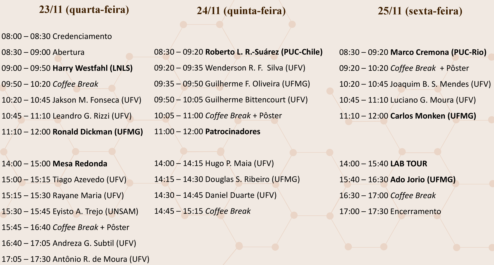

Livro de Resumos do IV Simpósio da Pós-Graduação em Física/UFV
23 a 25 de novembro de 2022
Programa de Pós-Graduação em Física da Universidade Federal de Viçosa (UFV) | ufv2022.simposiofisica.com
O Programa de Pós-Graduação em Física da UFV realiza em 2022 o IV Simpósio da Pós-Graduação em Física - UFV. O objetivo deste simpósio é promover a troca de experiência entre estudantes e reconhecidos pesquisadores do cenário nacional. O evento tem como público alvo estudantes de graduação e de pós-graduação do curso de Física e áreas afins. As atividades propostas para o simpósio incluem palestras por professores convidados, apresentações orais de discentes, sessão de pôsteres, laboratórios de portas abertas e mesa-redonda.
Cronograma

Mapa do evento
Dia 23 de novembro de 2022
Mesa Redonda
ME1-01 – Perspectivas para Pesquisa em Física no Brasil com o Atual Cenário de Cortes Orçamentários
Os setores de Educação, Ciência e Tecnologia vem sofrendo cortes orçamentários nos últimos anos, que impactam cada vez mais a formação de recursos humanos capacitados, bem como a produção científica do país. Após a definição do Novo Regime Fiscal, Instituído pela Emenda Constitucional n° 95/2016 e que define um teto de gastos para as despesas primeiras do país, rubricas estratégicas seguem em queda. Entre os anos de 2014 e 2021, o CNPq e a CAPES sofreram, respectivamente, quedas reais de 64% e 59% em seus orçamentos discricionários. Recentemente, mais da metade dos recursos do FNDCT foram bloqueados com a justificativa de não ultrapassar o teto de gastos. Já as Universidades públicas federais, que representam as principais instituições de pesquisa do país, passaram por um bloqueio de R$ 1,6 bilhão relativos ao orçamento do MEC. É neste contexto que se propõe esta mesa-redonda, intitulada "Perspectivas para Pesquisa em Física no Brasil com o Atual Cenário de Cortes Orçamentários"
Convidados Externos
CE1-01 – O Sirius e as novas oportunidades de pesquisa para a comunidade brasileira (Harry Westfahl Jr.)
Harry Westfahl Jr., Laboratório Nacional de Luz Síncroton (LNLS) | lnls.dir@lnls.br
O Sirius é uma fonte de luz síncrotron de 3 GeV de 4ª geração em operação no LNLS desde 2020. Ao final deste ano o projeto completará uma década desde a sua primeira ação orçamentária, entregando à nossa comunidade científica o estado da arte em infraestrutura de grande porte para investigação da estrutura microscópica de materiais sintéticos, naturais e biológicos. Os primeiros resultados publicados utilizando as linhas de luz da nova fonte de luz síncrotron brasileira já permitem legitimar, perante a comunidade internacional, que o Sirius está chegando à performance prometida com a conclusão da primeira fase de implantação, prevista para meados de 2024, com 14 linhas de luz, 350 mA de corrente no acelerador e modo de injeção contínua de corrente. Seguindo o ritmo atual do projeto, chegaremos ao fim de 2022, completando os primeiros 10 anos de uma empreitada singular de ciência e tecnologia, com 10 linhas de luz em funcionamento e outras 4 em montagem, tendo realizado em 2022 mais de 100 projetos de pesquisa nos experimentos de comissionamento. Este seminário apresentará destaques dos novos resultados do Sirius, o status atual do projeto e os planos de curto e médio prazo para nossa nova fonte de luz síncrotron.
CE1-02 – Transições de fase em gases de rede binárias com interações repulsivas, no equilíbrio e fora de equilíbrio (Ronald Dickman)
Ronald Dickman, Universidade Federal de Minas Gerais (UFMG) | dickman@fisica.ufmg.br
Estudos de fluidos binários com interações repulsivas de caroço duro entre espécies distintas têm contribuido muito à teoria da separação de fase dirigidas entropicamente. O Widom and Rowlinson mostrarem que em equilíbrio, uma mistura binária com interações de volume excluído entre espécies opostas, e sem interação alguma entre moléculas da mesma espécie, exibe uma separação de fase para densidades de um determinado valor crítico [1]. No gás em rede tipo Widom-Rowlinson (WRLG), duas espécies de partículas (A, B) difundem livremente através de trocas partícula-buraco, sujeito a ambas, exclusão de ocupância dupla e a proibição de pares A-B ocupando sítios primeiros vizinhos [2]. Sendo um sistema atérmico, as densidades de A e B são as únicos parâmetros de controle. A medida que aumentamos a densidade, surge uma transição de fase tipo Ising, levando para estados ordenados com domínios ricos em A ou B separados por interfaces ricas em sítios vazios. Uma variante do WRLG mantido fora de equilíbrio por um "drive" que favoreça saltos de partículas ao longo de uma direção (o DRWLG [3]) apresenta comportamentos atípicos como singularidades no fator estrutura e separação de fases em listras perpendiculares ao drive com um comprimento de onda que varia com a densidade e a intensidade do drive. Atualmente estamos tentando entender estes comportamentos utilizando uma descrição contínua [4]. Finalmente, o estudo da deposição aleatória, irreversível de partículas tipo WRLG em um substrato fornece desafios de análise combinatória e transições percolativas [5].
B. Widom and J. S. Rowlinson, J. Chem. Phys. 52, 1670 (1970).
R. Dickman and G. Stell, J. Chem. Phys. 102, 8674 (1995).
R. Dickman and R. K. P. Zia, Phys. Rev. E 97, 062126 (2018).
M. O. Lavrentovich, R. Dickman, and R. K. P. Zia, Phys. Rev. E 104, 064135 (2021).
P. H. L. Martins, R. Dickman, and R. M. Ziff, in progress.
Convidados Internos
CI1-01 – Engenharia Física: uma carreira com infinitas possibilidades (Jakson Miranda Fonseca)
Jakson Miranda Fonseca, Universidade Federal de Viçosa (UFV) | jakson.fonseca@ufv.br
A engenharia é baseada nas ciências básicas, principalmente física, química e matemática de forma que o engenheiro utiliza ciência para resolver problemas práticos, demandas da sociedade, aplicando a ciência em projetos que geram benefícios para as pessoas, sendo um profissional de ação, que age no problema específico. Enquanto os cientistas descobrem o mundo, investigam a natureza, constroem leis que descrevem o comportamento da natureza e ampliam o nosso conhecimento do mundo e o conhecimento existente, os engenheiros criam um mundo que nunca existiu quando utilizam do conhecimento científico para projetar, seja soluções de problemas específicos ou algo inovador que atenda aos mais diversos anseios da humanidade, considerando as limitações impostas pela praticidade, regulamentação, segurança e custos. O Engenheiro físico destaca-se entre os diversos engenheiros pela sua capacidade de investigar o desconhecido e buscar soluções para problemas nunca antes encontrados, possui uma formação que o diferencia dos demais engenheiros baseada nas ciências físicas e o qualifica a enveredar principalmente em áreas de alto impacto tecnológico sendo um profissional transdisciplinar apto a colaborar com equipes das mais diversas áreas do conhecimento, tornando a Engenharia Física uma carreira com infinitas possibilidades. Particular destaque será dado ao curso de Engenharia Física da UFV em fase final de criação e implantação que trará novas possibilidades para os estudantes interessados em física e áreas correlatas.
CI1-02 – Heterogeneidade em caminhadas aleatórias não-markovianas e a resposta mecânica de materiais viscoelásticos (Leandro Gutierrez Rizzi)
Leandro Gutierrez Rizzi, Universidade Federal de Viçosa (UFV) | lerizzi@ufv.br
Gelatinas são materiais curiosos que chamam a atenção de qualquer criança, assim como aconteceu com o adolescente James Clerck Maxwell [1], quem mais tarde concebeu umas das primeiras descrições do que conhecemos como viscoelasticidade. Neste seminário apresentarei uma abordagem baseada na microrreologia [2] que permite relacionar o movimento de partículas de prova imersas em géis viscoelásticos com as propriedades mecânicas desses materiais. Considerando a equação de Langevin generalizada, é possível obter expressões para o deslocamento quadrático médio ("mean-squared displacement", MSD) e o coeficiente de difusão dependente do tempo, os quais estão relacionados aos "kernels" de memória e às funções de resposta. Além disso, veremos como o MSD das trajetórias das partículas de prova pode ser utilizado para fornecer estimativas para o módulo de cisalhamento complexo e a viscosidade complexa do material. Também veremos um exemplo de como tal abordagem pode ser utilizada na descrição e na interpretação de dados experimentais obtidos próximos à transição de gelificação, onde estruturas heterogêneas são comumente observadas.
[1] L. Campbell, W. Garnett, The Life of James Clerk Maxwell (MacMillan, Londres, 1882).
[2] L. G. Rizzi. Microrheological approach for the viscoelastic response of gels. Journal of Rheology 64 (2020) 969 [http://doi.org/10.1122/8.0000034]
CI1-03 – Nanopartículas luminescentes produzidas por rotas químicas (Andreza Germana da Silva Subtil)
Andreza Germana da Silva Subtil, Universidade Federal de Viçosa (UFV) | andreza.subtil@ufv.br
Estudos em nanociência e nanotecnologia estão possibilitando o surgimento de novas tecnologias capazes de alterar de forma significativa o mundo moderno. A nanotecnologia não se limita apenas ao tamanho, mas às propriedades físicas, químicas, biológicas e ópticas únicas que surgem naturalmente quando se trabalha com materiais com tamanhos da ordem de nanômetros, e também à capacidade de manipular e projetar esses efeitos. Dentro deste contexto, nanoestruturas luminescentes, no caso do presente trabalho pontos quânticos produzidos a partir de diferentes materiais, são um dos principais elementos utilizados em pesquisas dentro do domínio da nanociência e nanotecnologia e suas propriedades ópticas têm atraído muita atenção em aplicações tanto em dispositivos, quanto em sistemas biológicos e na área de saúde. O interesse que as nanoestruturas luminescentes vêm despertando não se restringe somente ao seu grande potencial para a utilização em física aplicada. A versatilidade de manipulação dos pontos quânticos, tal que suas propriedades sejam modificadas, faz com que eles sejam, também, sistemas de grande interesse no estudo da física básica. Nosso grupo tem tratado temas relacionados à produção de novos materiais nanoestruturados luminescentes e ao estudo das propriedades físicas fundamentais bem como o estudo da interação da radiação desses materiais nanoestruturados e/ou nanocompósitos por meio de fotoluminescência de estado estacionário. Nessa apresentação pretendemos abordar alguns marcos do nosso laboratório no processo de produzir e caracterizar diferentes tipos de nanopartículas luminescentes tanto de materiais inorgânicos, quanto de materiais orgânicos.
CI1-04 – A aproximação harmônica auto-consistente em fases coerentes (Antônio Ribeiro de Moura)
Antônio Ribeiro de Moura, Universidade Federal de Viçosa (UFV) | antoniormoura@ufv.com
O magnetismo apresenta uma forte conexão com a spintrônica e o desenvolvimento de ferramentas teóricas é essencial para a compreensão de diversos problemas que envolvem o transporte de spin. Em geral, a geração de correntes de spin em meios magnéticos é realizada por meio da ressonância ferromagnética, processo no qual são utilizados campos magnéticos para excitar um modo coerente de vibração dos spins no material. Na fase coerente, os spins se comportam de forma síncrona e todo o sistema pode ser descrito por uma única função de onda macroscópica. Este comportamento quântico macroscópico é também observado em outros modelos com fase coerente e, portanto, a descrição dos estados coerentes é bem fundamentada. Usualmente, para o caso magnético, a base de estados coerentes é construída em termos da representação bosônica de Holstein-Primakoff, que fornece uma descrição simples apenas no caso de excitações não-interagentes. De modo a considerar flutuações térmicas, adotamos o formalismo da aproximação harmônica auto-consistente (AHAC) que inclui as flutuações por meio de parâmetros de renormalização. Uma vez que a hamiltoniana da AHAC é quadrática, a termodinâmica é determinada de forma direta em qualquer temperatura abaixo do valor crítico. Ao longo dos anos a aproximação harmônica tem sido usada com sucesso para a descrição de transições de fase e neste trabalho nos mostramos que o método é eficiente também na descrição de fases coerentes, em especial no estudo da injeção de correntes de um ferromagneto para um condutor normal. As propriedades da corrente de spin interfacial foram investigadas e os resultados obtidos reproduzem os dados experimentais com precisão.
Apresentações orais
A1-01 – Caracterização de materiais viscoelásticos heterogêneos do tipo Kelvin-Voigt via microrreologia (Tiago Nascimento de Azevedo)
Tiago Nascimento de Azevedo, Universidade Federal de Viçosa (UFV) | tiago.n.azevedo@ufv.br
Autores: T. N. Azevedo - Universidade Federal de Viçosa (UFV), K. M. Oliveira - Universidade Federal de Viçosa (UFV), H. P. Maia - Universidade Federal de Viçosa (UFV), A. V. N. C. Teixeira - Universidade Federal de Viçosa (UFV), L. G. Rizzi - Universidade Federal de Viçosa (UFV)
Materiais viscoelásticos, também conhecidos como fluidos complexos, são materiais que não podem ser caracterizados nem como nem como sólidos nem como fluidos simples. Quando submetidos a uma tensão de cisalhamento, sólidos armazenam energia mecânica e são elásticos, enquanto fluidos dissipam energia mecânica e são viscosos [1]. Por outro lado, quando materiais viscoelásticos são tensionados, suas microestruturas armazenam e dissipam energia de uma maneira intermediária que depende da frequência da tensão aplicada. O estudo dos materiais viscoelásticos leva a uma gama de materiais inteligentes que se comportam de um modo específico dependendo dos estímulos. Muitos materiais possuem uma estrutura heterogênea e sua correta caracterização é objeto de estudos teóricos [2] e experimentais, e.g. redes de actina, colágeno, redes de fibrilas e outros. Aqui apresentamos um modelo constitutivo generalizado simples de Kelvin-Voigt para caracterizar heterogeneidades de materiais viscoelásticos. Obtemos expressões exatas para o deslocamento quadrático médio (MSD) e para o coeficiente de difusão dependente do tempo de partículas de prova imersas em um fluido complexo descrito por este modelo. Simulações numéricas de dinâmica browniana validam nossos resultados teóricos. A utilidade do nosso modelo é comprovada pela sua aplicação em dados experimentais de microrreologia de géis de poliacrilamida e laponite, onde obtemos e descrevemos o módulo de cisalhamento complexo e caracterizamos o desenvolvimento de micro-heterogeneidades ao longo da transição sol-gel.
[1] T. N. Azevedo, L. G. Rizzi. Microrheology of filament networks from brownian dynamics simulations. Journal of Physics: Conference Series , IOP Publishing (2020).
[2] L. G. Rizzi. Microrheological approach for the viscoelastic response of gels. J. Rheol. 64, 969 (2020).
A1-02 – Aumento da toxicidade de fármacos à base de platina modulado pela cafeína (Rayane Maria de Oliveira)
Rayane Maria de Oliveira, Universidade Federal de Viçosa (UFV) | rayane.maria@ufv.br
Autores: Rayane Maria de Oliveira - Universidade Federal de Viçosa (UFV), Tiago de Assis Moura - Universidade Federal de Viçosa (UFV), Márcio Santos Rocha - Universidade Federal de Viçosa (UFV)
Embora muitos avanços tenham ocorrido ao longo dos anos nas quimioterapias, os efeitos colaterais, muitas vezes relacionados à falta de seletividade dos fármacos, continuam sendo um grande problema clínico. Assim, uma compreensão da interação dos medicamentos com a molécula de DNA pode ajudar a modular a resposta a tratamento de tumores. É bem relatado na literatura que a cafeína, potencializa os efeitos anticancerígenos do fármaco cisplatina ao inibir o reparo do DNA pela maquinaria celular. Aqui, realizamos ensaios de espectroscopia de força em molécula única, com pinças ópticas, para mostrar que a cafeína aumenta a toxicidade não apenas da cisplatina, mas também de vários fármacos à base de platina (transplatina, carboplatina e oxaliplatina) já em nível molecular, usando amostras contendo apenas DNA, fármacos de platina e o alcaloide em um tampão fosfato simples, ou seja, completamente fora do ambiente complexo encontrado dentro das células vivas reais. De fato, ao extrair parâmetros mecânicos, como comprimento de contorno e persistência desses complexos, nossos resultados mostram que a cafeína atua como um catalisador alostérico que aumenta a constante de associação entre o DNA e as platina em torno de \sim7,5\times (para carboplatina) até \sim24-29\times (para os outros três fármacos). Além disto, a presença de cafeína suprimiu qualquer cooperatividade que ocorre nas reações de ligação de alguns dos fármacos de platina (cisplatina e carboplatina) com a molécula de DNA quando o alcaloide está ausente. Esta é a primeira vez que tal propriedade da cafeína foi demonstrada em nível molecular fora do ambiente celular. Além disso, também mostramos que tal propriedade parece ser geral para fármacos à base de platina porque as mesmas conclusões foram alcançadas para quatros exemplos clássicos desses compostos. Portanto, o presente trabalho fornece novas informações sobre o mecanismo de ação envolvendo a combinação de compostos para aplicações quimioterápicas.
A1-03 – Finite-size correlation behavior near a critical point: a simple metric for monitoring the state of a neural network (Eyisto José Aguilar Trejo)
Eyisto José Aguilar Trejo, Universidad Nacional de Gral. San Martín (UNSAM) | eaguilartrejo@unsam.edu.ar
Autores: Eyisto J. Aguilar Trejo - Universidad Nacional de Gral. San Martı́n (UNSAM), Daniel A. Martin - Universidad Nacional de Gral. San Martı́n (UNSAM), Dulara De Zoysa - University of Maryland, Zac Bowen - Fraunhofer USA Center Mid-Atlantic, Tomas S. Grigera - Universidad Nacional de La Plata, Sergio A. Cannas - Universidad Nacional de Córdoba, Wolfgang Losert - University of Maryland, Dante R. Chialvo - Universidad Nacional de Gral. San Martı́n
In this work, a correlation metric \kappa_c is proposed for the inference of the dynamical state of neuronal networks. \kappa_c is computed from the scaling of the correlation length with the size of the observation region, which shows qualitatively different behavior near and away from the critical point of a continuous phase transition. The implementation is first studied on a neuronal network model, where the results of this new metric coincide with those obtained from neuronal avalanche analysis, thus characterizing well the critical state of the network. The approach is further tested with brain optogenetic recordings in behaving mice from a publicly available database. Potential applications and limitations for its use with currently available optical imaging techniques are discussed.
Pôsteres
P1-01 – Synthesis and characterization of luminescent nanoparticles (Caio Henrique Viana da Silva)
Caio Henrique Viana da Silva, Universidade Federal de Viçosa (UFV) | caio.viana@ufv.br
Autores: Caio Henrique Viana da Silva - Universidade Federal de Viçosa (UFV), Ray Nascimento Maronesi - Universidade Federal de Viçosa (UFV), Mariana da Costa Novo Pimenta Brandão - Universidade Federal de Viçosa (UFV), Andreza Germana da Silva Subtil - Universidade Federal de Viçosa (UFV)
Semiconductor crystals were used to build high-performance electronic devices, in solar panels, light detectors and many other applications. Today these semiconductor devices are more common, being used in different ways in different types of materials, since microscopic sensors to devices such as televisions. Inorganic semiconductors in their macroscopic form, bulk-3d, have continuous energy bands. A confinement in the three directions of space allows a complete location of electrons in these materials, giving rise to semiconductor quantum dots. Studies in nanoscience and nanotechnology are enabling the emergence of new technologies capable of significantly changing the modern world. In this context, luminescent nanostructures, quantum dots, are one of the main elements used in nanoscience studies and their optical properties have drawn much attention to applications in optoelectronic devices, biological systems and in medicine. Luminescent nanostructures, or quantum dots, are one of the main elements used in nanoscience studies and their optical properties have attracted a lot of attention. In quantum dots of the same material, it is possible to obtain emissions in the visible region changing only its size. In the case of conjugated polymer quantum dots, also known as Pdots, the emission of the nanostructure does not depend on its size, but on the polymer structure. In this work, luminescent CdTe quantum dots were produced, using TGA (thioglycolic acid) as a stabilizer, and were characterized by photoluminescence and absorption technique. In addition, Pdots were produced by precipitation technique, both in the absence and in the presence of the surfactant sodium dodecyl sulfate (SDS): Pdot - SDS. For this synthesis the Poly(9,9-di-n-dodecylfuorenyl-2,7-diyl) conjugated Polymer, PFD, was used. Optical characterization was performed using the photoluminescence technique, and images using the atomic force miscroscopy (AFM) certified the existence of Pdots.
P1-02 – Filmes finos de nanopartículas luminescentes e nanocompósitos: emissão de luz branca (Victor de Castro Arthuso)
Victor de Castro Arthuso, Universidade Federal de Viçosa (UFV) | victor.arthuso@ufv.br
Autores: Victor de Castro Arthuso - Universidade Federal de Viçosa (UFV), Caio Henrique Viana da Silva - Universidade Federal de Viçosa (UFV), Andreza Germana da Silva Subtil - Universidade Federal de Viçosa (UFV)
Estudos em nanociência e nanotecnologia estão possibilitando o surgimento de novas tecnologias capazes de alterar de forma significativa o mundo moderno. Nanoestruturas luminescentes, no caso do presente trabalho pontos quânticos e nanocompósitos produzidos e a partir de diferentes materiais, são um dos principais elementos utilizados em pesquisas dentro do domínio da nanociência e nanotecnologia e suas propriedades ópticas têm atraído muita atenção em aplicações tanto em dispositivos, quanto em sistemas biológicos e na área de saúde. Esse trabalho consiste na produção e caracterização óptica de filmes finos de nanopartículas luminescentes de diferentes naturezas e nanocompósitos feitos a partir da mistura das nanopartículas luminescentes entre elas e de polímeros sem nenhuma emissão, usados como matriz. Com isso, estamos estudando as características físicas fundamentais dos materiais buscando uma combinação ideal entre eles para que consigamos a emissão de luz branca, que consiste basicamente na emissão de todos os comprimentos de onda da região que compreende o espectro visível. Os filmes finos foram produzidos pelas técnicas de drop casting e spin-coating. Para a produção dos filmes pela técnica de spin-coating foi desenvolvido um spinner com materiais de baixo custo e controlado por Arduino. Os filmes estão sendo caracterizados por fotoluminescência e sua eficiência quântica de emissão está sendo medida com o auxílio de uma esfera integradora. Resultados preliminares indicam que eles possuem uma boa qualidade óptica e está sendo utilizado o diagrama de cromaticidade para o estudo das melhores combinações de sobreposições de camadas de filmes que emitirão luz branca. Pretendemos que esses estudos possam auxiliar em futuras aplicações desses “novos materiais” em dispositivos eletroluminescentes com emissão de luz branca, contendo nanopartículas em sua camada ativa. Os autores agradecem à FAPEMIG pela bolsa de IC concedida para a realização do projeto.
P1-03 – Landscape of competitive non-overlapping generation species (Sylvestre Aureliano Carvalho)
Sylvestre Aureliano Carvalho, Universidade de São Paulo (USP) | sylvestre.carvalho@gmail.com
Autores: Sylvestre A. Carvalho - Universidade de São Paulo (USP), Marcos S. Buckeridge - Universidade de São Paulo (USP), Rui D. M. Travasso - Universidade de Coimbra (UC), João G. B. Sales - Instituto Federal de Minas Gerais (IFMG)
In this work we present some results of a discrete model based on coupled map lattice to describe invasion process in a context of competition between two species. The variables of the model can represent seasonal plants as “red rice" (Oryza sativa), species commonly founded in the State of Rio Grande do Sul (Brazil), or some animals as periodical cycads or crabs. The model exhibit four fixed points, denoted by extinction of both species, native wins, invader wins, or coexistence of both species. When at least one of the species competes strongly, the system exhibit tristabilidade (characterized by extinction of both species, or one of the species eradicated). In regime of weak or strong competition by both species, the system presents quadristability (characterized by stability of the four equilibria). The route of each equilibrium point depends of growth rates and can depends of the initial conditions. Furthermore, we study the effect of dispersal from the patches on landscape. We found a threshold in phase space between the dispersal coefficients and the number of spots initially occupied by invader in the landscape. That separatrix delimite the coexistence between two species or native wins. Species with fast mobility even with few spots initially occupied by invader populations initially can guarantees the coexistence. Then, our results show that the dispersal and initial focus have great effect on the system dynamics and therefore are conditions that make influence of biocontrol.
P1-04 – Heterogeneous mean-field theory for two-species symbiotic processes on networks (Guilherme Henrique da Silva Costa)
Guilherme Henrique da Silva Costa, Universidade Federal de Viçosa (UFV) | guilherme.h.silvacosta@gmail.com
Autores: Guilherme S. Costa - Universidade Federal de Viçosa (UFV), Marcelo M. de Oliveira - Universidade Federal de São João del Rey (UFSJ), Silvio C. Ferreira - Universidade Federal de Viçosa (UFV)
A simple model to study cooperation is the two-species symbiotic contact process (2SCP), in which two different species spread on a graph and interact by a reduced death rate if both occupy the same vertex, representing a symbiotic interaction. The 2SCP is known to exhibit a complex behavior with a rich phase diagram, including continuous and discontinuous transitions between the active phase and extinction. In this work, we advance the understanding of the phase transition of the 2SCP on uncorrelated networks by developing a heterogeneous mean-field (HMF) theory, in which the heterogeneity of contacts is explicitly reckoned. The HMF theory for networks with power-law degree distribution shows that the region of bistability (active and inactive phases) in the phase diagram shrinks as the heterogeneity level is increased by reducing the degree exponent. Finite-size analysis reveals a complex behavior where a pseudodiscontinuous transition at a finite size can be converted into a continuous one in the thermodynamic limit, depending on degree exponent and symbiotic coupling. The theoretical results are supported by extensive numerical simulations.
P1-05 – Um Estudo Sobre Processos Estocásticos em Canais Iônicos (Gustavo Henrique da Silva)
Gustavo Henrique da Silva, Universidade Federal de Minas Gerais (UFMG) | gustavohenriquedasilva196@gmail.com
Autores: Gustavo Henrique da Silva - Universidade Federal de Minas Gerais (UFMG), Lucas Lages Wardil - Universidade Federal de Minas Gerais (UFMG)
Um processo estocástico pode ser definido como um conjunto não vazio T denominado espaço paramétrico e na associação de cada t \in T de uma variável aleatória X_t sobre o mesmo espaço de probabilidade, em outras palavras, se consideramos t como o tempo, então X_t evolui no tempo de forma aleatória. A partir do conceito de processos estocástico podemos modelar sistemas imprevisíveis, dentro eles, sistemas biológicos.
Na membrana celular existem proteínas que controlam o transporte de íons, essas proteínas são chamadas de canais iônicos que basicamente formam poros que controlam o fluxo de íons através da membrana da célula. O fechamento e a Abertura de um canal iônico podem ser regulados via estímulo mecanossensíveis, dependentes da voltagem ou dependente de ligantes. Os modelos eletrofisiológicos para uma célula geralmente assumem que o número de canais iônicos é suficientemente grande para que se possa determinar as correntes transmembranares médias com base nas probabilidades de aberturas dos canais analisados individualmente, isso decorre da lei dos grandes números, porém as equações determinísticas geradas por este modelo não são capazes de explicar eventos espontâneos impulsionado por flutuações. Neste trabalho foi utilizado a teoria de processos estocásticos para o sistema de canais iônicos; e para isto escrevemos a equação mestra para o sistema considerando N canais iônicos como uma reação química monomolecular e resolvemos a equação de Fokker-Planck para a distribuição estacionária no equilíbrio.
P1-06 – Criticalidade dinâmica em redes aleatórias obtidas no crescimento de agregados fora de rede (Thainá Ferreira Silva)
Thainá Ferreira Silva, Universidade Federal de Viçosa (UFV) | thaina.ferreira@ufv.br
Autores: Thainá Ferreira Silva - Universidade Federal de Viçosa (UFV), Sidiney Geraldo Alves - Universidade Federal de São João del-Rei (UFSJ), Silvio da Costa Ferreira Junior - Universidade Federal de Viçosa (UFV)
Uma das questões centrais do estudo de sistemas com interação de curto alcance é o efeito causado por impurezas aleatoriamente introduzidas em uma determinada estrutura espacial por meio da qual os agentes interagem, que são chamadas de desordem congelada. Sistemas reais são, em sua maioria, afetados por este de tipo perturbação seja por contaminantes, imperfeições da estrutura cristalina ou pela própria dinâmica de formação das redes que são intrinsecamente irregulares como, por exemplo, redes de transporte terrestre. Redes geradas com vínculos geométricos podem possuir padrão de correlação na desordem. A relevância desta desordem pode ser investigada por meio do expoente de wandering, quando \omega>1/2 a desordem da rede é relevante, de acordo com o critério de Luck-Harris. Propomos estudar, a partir da conectividade formada em modelos de agregação fora de rede, uma opção para gerar redes com desordem. Dentre os diversos modelos de crescimento de agregados, um amplamente estudado é o modelo de Eden. Uma de suas variantes é o modelo de Eden fora de rede (MEFR), em que partículas de um agregado duplicam-se aleatoriamente com uma determinada taxa. A partir das ligações entre essas partículas, uma rede com restrições geométricas pode ser extraída. Neste trabalho, estudamos o MEFR com partículas polidispersas, com diferentes raios, e com o crescimento utilizando condição de contorno periódica. Utilizando as partículas geradas pelo MEFR, extraímos as ligações entre as partículas do agregado a fim de obter o número de vizinhos (grau) das partículas e sua vizinhança para realizar algumas medidas relevantes, as quais foram feitas para diferentes razões r entre o raio máximo e o raio mínimo. Obtivemos agregados com expoente de wandering\omega>1/2, que nos mostra que a desordem deste modelo é relevante, e que apresentam uma distribuição mais heterogênea de graus a medida que a razão r aumenta levando em contra a estrutura hierárquica entre as partículas.
P1-07 – Theoretical approaches to epidemics with waning immunity (José Carlos de Moraes Silva)
José Carlos de Moraes Silva, Universidade Federal de Viçosa (UFV) | jose.c.moraes@ufv.br
Autores: José Carlos de Moraes Silva - Universidade Federal de Viçosa (UFV), Diogo Henrique da Silva - Universidade de São Paulo (USP), Francisco Aparecido Rodrigues - Universidade de São Paulo (USP), Silvio da Costa Ferreira Junior - Universidade Federal de Viçosa (UFV)
O papel da perda imunológica em modelos básicos de epidemias em redes tem sido subestimado, embora seja perceptivelmente fundamental para surtos epidêmicos reais. Uma questão central é qual abordagem de campo médio é mais precisa para descrever a dinâmica epidêmica. Abordamos esse problema considerando o modelo epidêmico suscetível-infectado-recuperado-suscetível (SIRS) em redes. Duas teorias de campo médio a nível de pares, uma baseada na transmissão dinâmica recorrente de mensagens (rDMP) e outra na teoria de campo médio de pares em redes congeladas (PQMF), são comparadas com simulações estocásticas extensivas em redes de tamanho grande e de diferentes níveis de heterogeneidade. Para tempos de perda imunológica maiores ou comparáveis com o tempo de recuperação, a teoria rDMP supera a PQMF em redes com distribuição de graus em lei de potência, P(k) \sim k^{-\gamma}. Em particular, para \gamma > 3, o limiar epidêmico observado nas simulações é finito, em concordância qualitativa com a teoria rDMP, enquanto a teoria PQMF leva a um limiar assintoticamente nulo. A prevalência epidêmica crítica para \gamma > 3 está localizada em um conjunto finito de vértices no caso da teoria PQMF. Em contraste, a localização acontece em uma fração subextensiva da rede na teoria rDMP. As simulações, no entanto, indicam que os padrões de localização da epidemia real estão entre as duas teorias de campo médio, havendo necessidade de abordagens teóricas aprimoradas para entender a dinâmica do modelo SIRS.
P1-08 – A Utilização de Softwares e Dispositivos Eletrônicos no Ensino Prático da Interferência Sonora nas Escolas (Luana Lachini Pereira)
Luana Lachini Pereira, Colégio de Aplicação da Universidade Federal de Viçosa (CAp-COLUNI - UFV) | luana.pereira1@ufv.br
Autores: Luana Lachini Pereira - Colégio de Aplicação da Universidade Federal de Viçosa (CAp COLUNI - UFV), Maria Antônia Xavier - Colégio de Aplicação da Universidade Federal de Viçosa (CAp COLUNI - UFV)
A utilização de novas tecnologias eletrônicas e digitais nas escolas tem sido colocada amplamente em pauta, principalmente no que tange ao ensino prático de disciplinas ligadas às chamadas Ciências Naturais, nas quais inclui-se a Física. É possível encontrar uma extensa gama de artigos e monografias que tratam a respeito desse assunto, tais como os trabalhos de SEGANTINI (2014) e KENSKI (2010), que buscaram ressaltar as implicações da inserção dessas tecnologias aliadas ao ensino. Diante desse cenário, o presente trabalho buscou utilizar softwares gratuitos e aparelhos eletrônicos para a realização de um experimento acessível, que poderia, simultaneamente, possibilitar o ensino prático de fenômenos da Física para alunos do Ensino Médio e demonstrar a eficiência que novas tecnologias podem proporcionar às escolas. Além disso, o teor mais prático do trabalho voltou-se para o estudo da interferência sonora, fenômeno eleito para ser usado como meio para a aplicação de tais tecnologias. Assim, tornou-se também objetivo do trabalho simular na prática uma onda sonora estacionária por meio da qual seria possível aferir pontos de mínima e máxima intensidade do som, demonstrando o fenômeno da interferência. Contou-se com a interface do softwareAudacity (utilizado para a geração e reprodução de ondas em frequências definidas) e caixas de som para computador. Posicionando as caixas de som uma em frente à outra e configurando as ondas sonoras por meio do software, pode-se verificar pontos de mínima e máxima intensidade sonora por meio de um decibelímetro para smartphones e um microfone. Nesse sentido, concluiu-se que as tecnologias utilizadas no experimento foram de grande auxílio para sua realização e para a observação de fenômenos físicos, mostrando que softwares, aparelhos eletrônicos e diferentes recursos podem ser grandes aliados nas práticas educativas nas escolas e na busca por uma nova metodologia de ensino que instigue os alunos à inovação e à curiosidade.
P1-09 – Desenvolvimento de uma máquina de raios X, um detector Geiger e um goniômetro de baixo custo para o estudo da absorção, difração e obtenção de radiografias (Wenderson Rodrigues Filho da Silva)
Wenderson Rodrigues Filho da Silva, Universidade Federal de Viçosa (UFV) | wenderson.f@ufv.br
Autores: Wenderson Rodrigues Fialho da Silva - Universidade Federal de Viçosa (UFV), Jakson Miranda Fonseca - Universidade Federal de Viçosa (UFV).
Nesse trabalho é relatado o desenvolvimento de uma máquina de raios X de baixo custo utilizando materiais alternativos e de fácil acesso, para fins didáticos, bem como a construção de um contador GeigerMüller e um goniômetro, para estudos sobre difração de raios X, absorção, assim como para a obtenção e análise de radiografias de objetos variados utilizando o equipamento. O equipamento é quase que completamente composto por partes reutilizadas de dispositivos eletrônicos obsoletos, sendo necessário, apenas, a aquisição de uma ampola Geiger-Müller e de alguns componentes eletrônicos para confecção do sensor de raios X e do oscilador, utilizado para elevar a tensão no transformador. Todo o dispositivo pode ser custeado com cerca de $250,00. Foram realizadas medidas para caracterização do equipamento, como contagem do número de fótons de raios X emitidos, bem como uma análise via Microscopia Eletrônica de Varredura (MEV), afim de se conhecer a constituição química da carapaça da válvula emissora de raios X utilizada, a qual foi retirada de um tudo de televisor antigo da década de 1960, onde possuía a função de um diodo retificador. Foi possível a obtenção de radiografias e, em função da impossibilidade de utilização da válvula alternativa para estudos quantitativos acurados, obteve-se resultados preliminares de alguns estudos sobre absorção de raios X utilizando o equipamento proposto. Tais estudos levaram a conclusão de que, para análises quantitativas de maior confiabilidade, a substituição da ampola alternativa utilizada faz-se necessário. As adaptações elétricas são apresentadas e uma ampola de industrial de baixo custo é sugerida. Desse modo, o equipamento pode vir a ser utilizado em estudos de difração e absorção de raios X, mantendo toda estrutura desenvolvida.
P1-10 – Z \to 3X decay width from dark matter Standard Model extension (Daniel Oliveira Rocha Azevedo)
Daniel Oliveira Rocha Azevedo, Universidade Federal de Viçosa (UFV) | daniel.azevedo@ufv.br
Autores: D.O.R. Azevedo - Universidade Federal de Viçosa (UFV), M.L. Bispo - Universidade Federal de Viçosa (UFV), O.M. Del Cima - Universidade Federal de Viçosa (UFV), J.A. Helayël-Neto - Centro Brasileiro de Pesquisas Físicas (CBPF)
The anomalous decay of the beryllium excited state ^8Be^*\to ^8Be + X, identified by the ATOMKI experiment in 2016, first indicated the possibility of a fifth gauge interaction in the MeV scale, mediated by a massive X-boson of approximately 17 MeV. It was immediately followed by theoretical propositions as a minimal U(1) extension of the Standard Model (SM). The recent measurements of the W bosons mass and the muon anomalous magnetic moment further indicate the necessity of some kind of modification in the SM . In this work, we analyse a Z^0 decaying into 3 X bosons within such a U(1) extended SM, in the case of a non-linear hypercharge sector of the Born-Infeld type, in which there is a kinetic mixing of the hypercharge and extended sectors. The non-linearity of the theory allows for neutral bosons quartic couplings, which are highly supressed, already at tree-level, and the kinetic mixing brings us closer to dark matter scenarios, where this mechanism is frequently used.
P1-11 – The quantum scale invariance in graphene-like quantum electrodynamics (Lázaro Souza Lima)
Lázaro Souza Lima, Universidade Federal de Viçosa (UFV) | lazaro.lima@ufv.br
Autores: Oswaldo M. Del Cima - Universidade Federal de Viçosa (UFV), Daniel H.T. Franco - Universidade Federal de Viçosa (UFV), Lázaro S. Lima - Universidade Federal de Viçosa (UFV), Emerson S. Miranda - Universidade Federal de Viçosa (UFV)
Neste trabalho, analisamos uma eletrodinâmica quântica planar (QED3) com paridade preservada e férmions não massivos. Mostramos que o modelo é finito no ultravioleta e no infravermelho e possui funções β e dimensões anômalas dos campos nulas, o que mimetiza a invariância de escala no grafeno. Ainda, mostramos que não há anomalia pseudoquiral.
P1-12 – First-principle validation of Fourier's law in d=1,2,3 classical systems (Henrique Santos Lima)
Henrique Santos Lima, Centro Brasileiro de Pesquisas Físicas (CBPF) | hslima94@cbpf.br
Autores: Henrique Santos Lima - Centro Brasileiro de Pesquisas Físicas (CBPF), Constantino Tsallis - Centro Brasileiro de Pesquisas Físicas (CBPF), Ugur Tirnakli - Centro Brasileiro de Pesquisas Físicas (CBPF), Deniz Eroglu - Centro Brasileiro de Pesquisas Físicas (CBPF)
We numerically study the thermal transport in the classical inertial nearest-neighbor XY ferromagnet in d=1,2,3, the total number of sites being given by N=L^d, where L is the linear size of the system. For the thermal conductance \sigma, we obtain \sigma(T,L)\, L^{\delta(d)} = A(d)\, e_{q(d)}^{- B(d)\,[L^{\gamma(d)}T]^{\eta(d)}} (with e_q^z \equiv [1+(1-q)z]^{1/(1-q)};\,e_1^z=e^z;\,A(d)>0;\,B(d)>0;\,q(d)>1;\,\eta(d)>2;\,\delta \ge 0; \,\gamma(d)>0), for all values of L^{\gamma(d)}T for d=1,2,3. In the L\to\infty limit, we have \sigma \propto 1/L^{\rho_\sigma(d)} with \rho_\sigma(d)= \delta(d)+ \gamma(d) \eta(d)/[q(d)-1]. The material conductivity is given by \kappa=\sigma L^d \propto 1/L^{\rho_\kappa(d)} (L\to\infty) with \rho_\kappa(d)=\rho_\sigma(d)-d. Our numerical results are consistent with 'conspiratory' d-dependences of (q,\eta,\delta,\gamma), which comply with normal thermal conductivity (Fourier law) for all dimensions.
P1-13 – Transição de primeira ordem no modelo XY generalizado bidimensional (Pedro Augusto da Silva)
Pedro Augusto da Silva, Universidade Federal de Viçosa (UFV) | pedro.a.silva@ufv.br
Autores: Pedro Augusto da Silva - Universidade Federal de Viçosa (UFV), Ricardo Junior Campos Lopes - Scuola Internazionale Superiore di Studi Avanzati(SISSA), Afranio Rodrigues Pereira - Universidade Federal de Viçosa (UFV)
O modelo XY bidimensional é um dos modelos mais simples que suportam excitações topológicas, onde no caso ferromagnético já é de conhecimento que apesar da ausência de ordem de longo alcance convencional a temperatura finita, este modelo apresenta uma transição de fase conhecida como Berezinskii-kosterlitz-Thouless(BKT), devido a separação dos vórtices que surgem no sistema. Generalizações destes modelos se tornaram de grande interesse nas últimas duas décadas devido a natureza desta transição de fase. O objetivo deste trabalho é apresentar os resultados obtidos pelo método de Monte Carlo para o modelo XY generalizado em duas dimensões proposto por Romano e Zagrebnov. Para pequenos valores do parâmetro de generalização, características de transição de fase BKT são encontradas, a medida que aumentamos o parâmetro de generalização, características de transição de fase de primeira ordem começam a surgir.
P1-14 – Nanopartículas de polímero conjugado: emissão e caracterização pela técnica de fotoluminescência (Jéssica Edwiges de Freitas Santos)
Jéssica Edwiges de Freitas Santos, Centro Educacional de Ervália (CENER) | jessicaedwigesfs@gmail.com
Autores: Jéssica Edwiges de F. Santos - Centro Educacional de Ervália (CENER), Andreza G. S. Subtil - Universidade Federal de Viçosa (UFV)
Desde a descoberta da condutividade dos polímeros conjugados, essa classe de material tem despertado grande interesse devido às suas propriedades de condutividade, fotoluminescência e eletroluminescência, visando principalmente o seu uso em displays e dispositivo emissores de luz. As nanopartículas de polímeros conjugados, ou mais comumente conhecidos como pontos quânticos de polímeros conjugados luminescentes, Pdots, foram originalmente desenvolvidos com o intuito de produzir filmes finos dentro do domínio de sistemas nanoestruturados para comporem dispositivos optoeletrônicos e atualmente essas nanoestruturas fluorescentes têm atraído considerável atenção principalmente em aplicações biológicas, como marcadores celulares. Nesse trabalho reportaremos os resultados obtidos durante a execução da bolsa de Iniciação Científica Júnior/CNPq, cedida como premiação de trabalhos apresentados na Feira de Ciências, edição 2021, promovida pelo Departamento de Física-UFV. As nanopartículas estudadas foram obtidas pela técnica da precipitação. Sob condições apropriadas, temos como resultado nanopartículas de polímero (Pdots). Foram produzidas nanopartículas dos polímeros conjugado MEH-PPV, Poly[2-methoxy-5-(2-ethylhexyloxy)-1,4-phenylenevinylene, e do PFD, Poly(9,9-di-n dodecylfuorenyl-2,7-diyl). Foi feito, também, o estudo da adição do surfactante SDS em diferentes concentrações nas soluções de Pdots, pois resultados preliminares obtidos indicam que a presença do surfactante reduz de forma considerável o tamanho das nanopartículas. Para o estudo das propriedades físicas básicas das amostras foi utilizada a fotoluminescência como a principal técnica experimental. No caso das amostras estudadas o surfactante presente na solução alterou apenas a intensidade de emissão, indicando que a forma do espectro obtido é uma característica própria do polímero estudado e do solvente utilizado. Os autores agradecem ao CNPq pela bolsa concedida.
P1-15 – On the origin of the negative elastic contribution to the mechanical response of gels (Leonam Duarte)
Leonam Duarte, Universidade Federal de Viçosa (UFV) | leonam.duarte@ufv.br
Autores: Leonam K. R. Duarte - Universidade Federal de Viçosa (UFV), Leandro G. Rizzi - Universidade Federal de Viçosa (UFV)
In this work we present a simple coarse-grained model that display all the features recently observed in experiments of gels, including the negative elastic contribution to their modulus of elasticity G(T). Considering experimental data on regular networks made of tetra-arm PEG gels, we show how our model can be used to describe their mechanical properties, i.e., stress-strain relationship, as a function of the temperature.
P1-16 – Analise de dados para conhecimento e prevenção de incêndios na área da Amazônia legal com Python (Millena Xavier Martins)
Millena Xavier Martins, Colégio de Aplicação da Universidade Federal de Viçosa (CAp-COLUNI - UFV) | millena.martins@ufv.br
Autores: Millena Xavier Martins - CAp Coluni, Lucas Cabral Maselli de Souza - CAp Coluni, Daniel Rodrigues Ventura - CAp Coluni (Orientador)
O nosso país possui vasta área de vegetação e o aumento de períodos de secas tem levado ao crescimento de incêndios florestais. Tais fenômenos relacionam-se com a redução da umidade nos ambientes e afetam diretamente a natureza. Esses se caracterizam pela disseminação frequente do fogo, sendo normalmente intensificada na época de estiagem. O INPE trabalha no mapeamento dessas ocorrências, e como resultado, gera um banco de dados com as principais informações. Utilizando-se desse recurso e da inteligência artificial, esse trabalho mostra a coletânea dos registros, análise dos dados e uso de algoritmos de machine learning para a previsão desses eventos. Os dados analisados estatisticamente e a discussão dos mesmos podem guiar as inovações que orientem na busca da solução na prevenção destes incêndios
Como objetivo geral, pretende-se extrair dados sobre a ocorrência de incêndios na Amazônia Legal, para a construção de recursos interativos e acessíveis (como mapas, gráficos e tabelas). A partir da análise destes registros, intenciona-se elaborar previsões em função de épocas e áreas de maior incidência, utilizando algoritmos de machine learning.
Já como objetivos específicos, tem-se:
Análise dos Dados mapeados pelo INPE;
Analisar, filtrar e organizar os dados;
Executar um código de machine learning para prever os dados;
Analisar sistematicamente os resultados.
P1-17 – Estática de Paredes de Domínio em Nanofitas Curvas com Anisotropias Magnetocristalinas (Gabriel Riato de Andrade Silva)
Gabriel Riato de Andrade Silva, Universidade Federal de Viçosa (UFV) | gabriel.silva1@ufv.br
Autores: Gabriel Riato de Andrade Silva - Universidade Federal de Viçosa (UFV), Winder Alexander de Moura-Melo - Universidade Federal de Viçosa (UFV), Vagson Luiz de Carvalho Santos - Universidade Federal de Viçosa (UFV)
Usando uma abordagem analítica estudamos possíveis configurações de paredes de domínio em nanofios magnéticos com perfil retangular, sob diferentes curvaturas e anisotropias de eixo fácil. Em razão dos comprimentos de 0,3 a 5 mícrons e dimensões transversais entre 10 e 20 nm consideramos o sistema quase unidimensional, incorporando a solução do caso 1D como um ansatz para descrição da magnetização do mesmo. Modelamos o equilíbrio com três interações em jogo: dipolar, de troca e anisotropia. Supondo a posição da parede de domínio fixa no meio da fita pela curvatura, calculamos a energia total dessas interações em função da direção para a qual o centro da parede aponta e analisamos seus mínimos. Começamos por uma configuração estudada anteriormente: a parede de domínio transversal. Obtivemos resultados para esta parede com as constantes do permalloy, sob dois possíveis eixos de fácil magnetização: radial e perpendicular ao plano de curvatura. Os resultados mostraram uma série de efeitos, como: sobrefixação/afrouxamento , deriva direcionada e criação/destruição de configurações de equilíbrio nas variadas razões de aspecto e anisotropias.
Dia 24 de novembro de 2022
Convidados Externos
CE2-01 – Magnonic Spin Current in Ferromagnetic and Antiferromagnetic Insulators (Roberto L. Rodríguez-Suárez)
Roberto L. Rodríguez-Suárez, Pontificia Universidad Católica de Chile | rrodriguez@fis.uc.cl
Since the beginning of spintronics with the discovery of the giant magneto-resistance effect, sophisticated applications, such as hard-disk read heads and magnetic random access memories, have been introduced in the information market. The main operation in spintronics is the creation, manipulation, and detection of spin currents. In classical spintronics, spin currents are generated by using the exchange interaction between conduction electrons and local spins in ferromagnetic conductors. Alternatively, spin currents can also be generated through the spin Hall effect, ferromagnetic resonance (FMR) driving spin pumping, and spin Seebeck effect. On the other hand, their detection is usually done through its conversion into charge currents by means of the inverse spin Hall effect. Spin current phenomena were initially studied in non-magnetic metals, in which a pure spin current consists of electrons with opposite spins moving in opposite directions. Early was recognized that the transport mechanism is the diffusion of spin accumulation generated by some process, such as the spin pumping at the interface with a ferromagnet under FMR. Later it was discovered that spin currents could also flow in ferromagnetic insulators. This gave rise to the areas of magnonics and insulator spintronics, in which the carriers of spin information are magnons, the quanta of spin waves. In the meantime, spin transport in antiferromagnetic insulators (AFIs) was overlooked probably because these materials have vanishing net magnetization. This scenario began to change with new experimental and theoretical results showing that AFs have several advantages over ferromagnets in spintronics phenomena. For example, AFs are insensitive to external magnetic perturbations and its ultrafast dinamics promises device operations in the terahertz range. In this talk, I review the theory for spin transport in ferromagnetic and antiferromagnetic insulators based on the diffusion magnons in these materials.
Apresentações orais
A2-01 – Construção de um medidor de campo magnetico para utilização em processos de geração e manipulação de correntes puras de spin (Wenderson Rodrigues Filho da Silva)
Wenderson Rodrigues Filho da Silva, Universidade Federal de Viçosa (UFV) | wenderson.f@ufv.br
Autores: Wenderson Rodrigues Fialho da Silva - Universidade Federal de Viçosa (UFV); Leonardo V. Freitas - Universidade Federal de Viçosa (UFV); Rafael O. R. R. Cunha - Universidade Federal de Viçosa (UFV); Joaquim B. S. Mendes - Universidade Federal de Viçosa (UFV)
Neste trabalho apresentamos a construção de um medidor de campo magnético (gaussímetro) com alta sensibilidade e detecção de 1 a 80 mT, constituído a partir de componentes eletrônicos simples, com proposta de aplicação em uma montagem experimental para geração de correntes puras por meio do efeito spin Seebeck. O dispositivo faz leituras de campo magnético e permite a comunicação com um computador por meio do microcontrolador ATmega328P do Arduino Uno. O equipamento também dispõe de uma tela LCD 16x2, a qual possibilita o acompanhamento das medições no próprio aparelho. Por meio de um cabo USB, o dispositivo é alimenta com 5 volts e troca dados com um computador, que são interpretados por um software desenvolvido em linguagem C++ em conjunto com uma interface gráfica LabVIEW. O sensor de campo magnético utilizado é o SS49E, o qual se mostrou apropriado, uma vez que, com ele, foi possível medir campos magnéticos num intervalo de valores satisfatório, bem como realizar medições de campos que variam rapidamente no tempo. Para realizar medidas em ambientes de profundidade, como no interior de eletroímãs, desenvolveu-se uma sonda, onde em uma das extremidades foi afixado o sensor Hall. O gaussímetro desenvolvido foi empregado no desenvolvimento de uma montagem experimental para investigações dos efeitos spin Seebeck e spin Hall, onde foi possível estimar o ângulo Hall de spin para bicamadas formada por um filme de platina (Pt) crescido sobre um filme magnético isolante de YIG (granada de ferro e ítrio). Portanto, o gaussímetro desenvolvido tem potencial para ser utilizado tanto em ambientes de ensino como os de pesquisa, em ambientes abertos ou em laboratórios, para realização de medidas de campos magnéticos nos mais variados sistemas e tem como principal vantagem o baixo custo de produção, de aproximadamente R$ 120,00.
A2-02 – Random walk with photons (Guilherme Eduardo Freire Oliveira)
Guilherme Eduardo Freire Oliveira, Universidade Federal de Minas Gerais (UFMG) | guilhermeefoliveira@gmail.com
Autores: Guilherme Eduardo Freire Oliveira - Universidade Federal de Minas Gerais (UFMG), Christian Maes - Katholieke Universiteit Leuven (KUL), Kasper Meerts - Katholieke Universiteit Leuven (KUL)
We introduce a stochastic multi-photon dynamics on reciprocal space. Assuming isotropy, we derive the diffusion limit for a tagged photon to be a nonlinear Markov process on frequency. The nonlinearity stems from stimulated emission. In the case of Compton scattering with thermal electrons, the limiting process describes the dynamical fluctuations around the Kompaneets equation, which describes the relaxation of a photon gas to the Planck law. Indeed, the study of the underlying stochastic process (termed the "Kompaneets process") is interesting because it enables access to fluctuations in the context of radiation, much in the same spirit as the Langevin equation for the Brownian motion. From our best knowledge, that study has not yet been mentioned or carried on the literature.
A2-03 – Domain wall damped harmonic oscillations induced by curvature gradients in elliptical magnetic nanowires (Guilherme Henrique Rezende Bittencourt)
Guilherme Henrique Rezende Bittencourt, Universidade Federal de Viçosa (UFV) | guilherme.bittencourt@ufv.br
Autores: G. H. R. Bittencourt - Universidade Federal de Viçosa (UFV), S. Castillo-Sepúlveda - Universidad Autónoma de Chile, O. Chubykalo-Fesenko - Instituto de Ciencia de Materiales de Madrid, R. Moreno - University of Edinburgh, D. Altbir - Universidad de Santiago de Chile, V. L. Carvalho-Santos - Universidade Federal de Viçosa (UFV)
This work focuses on the dynamics of a DW displacing along an elliptic bent NW with under the action of spin-polarized electric currents and external magnetic fields. Our results evidence that a curvature gradient induces an exchange-driven effective tangential field responsible for pinning a DW at the maximum curvature point in the NW. However, the competition between the torques produced by the external stimuli and the curvature-induced effective fields changes the DW equilibrium position and phase. Therefore, when the external stimuli are below a certain threshold, the DW follows a damped harmonic oscillation around the new equilibrium position. Above this threshold, DW displaces along the NW under an oscillatory translational motion.
A2-04 – Rumor Spreading in a Polarized Society (Hugo Pereira Maia)
Hugo Pereira Maia, Universidade Federal de Viçosa (UFV) | hugo.maia@ufv.br
Autores: Hugo P. Maia - Universidade Federal de Viçosa (UFV), Silvio C. Ferreira - Universidade Federal de Viçosa (UFV), Marcelo L. Martins - Universidade Federal de Viçosa (UFV)
Rumors have ignited revolutions, undermined the trust in political parties, or threatened the stability of human societies. Such destructive potential has been significantly enhanced by the development of on-line social networks. Several theoretical and computational studies have been devoted to understanding the dynamics and to control rumor spreading. In the present work, a model of rumor-telling in opinion polarized networks was investigated through extensive computer simulations. The key mechanism is the coupling between ones’ opinions and their leaning to spread a given information, either by supporting or opposing its content. We report that a highly modular topology of polarized networks strongly impairs rumor spreading, but the couplings between agent’s opinions and their spreading/stifling rates can either further inhibit or, conversely, foster information propagation, depending on the nature of those couplings. In particular, a controversy-seeking mechanism, in which agents are stimulated to postpone their transitions to the stiffer state upon interactions with other agents of confronting opinions, enhances the rumor spreading. Therefore such a mechanism is capable of overcoming the propagation bottlenecks imposed by loosely connected modular structures.
A2-05 – Determinação de área de superfície especifica através do efeito de quenching da fluorescência em amostras de grafeno (Douglas dos Santos Ribeiro)
Douglas dos Santos Ribeiro, Universidade Federal de Minas Gerais (UFMG) | douglas.fisica.ufmg@gmail.com
Autores: Douglas S. Ribeiro - Universidade Federal de Minas Gerais (UFMG), Joyce C. C. Santos - Universidade Federal de Minas Gerais (UFMG), Sebastian Grieger - Ruprecht-Karls-Universität Heidelberg (Alemanha), João Luiz E. Campos - Universidade Federal de Minas Gerais (UFMG), Lucas R. P. Machado - Universidade Federal de Minas Gerais (UFMG), Flávia G. Pacheco - Centro de Desenvolvimento da Tecnologia Nuclear (CDTN/CNEN), Thales F. D. Fernandes - Universidade Federal de Minas Gerais (UFMG), Catarina C. Haase - Universidade Federal de Minas Gerais (UFMG), Diego L. Silva - Universidade Federal de Minas Gerais (UFMG), Marcos Guterres - Universidade Federal de Minas Gerais (UFMG), Eder M. Soares - Centro de Desenvolvimento da Tecnologia Nuclear (CDTN/CNEN), Rozana M. Martins - Centro de Desenvolvimento da Tecnologia Nuclear (CDTN/CNEN), Jessica P. Del'Boccio - Centro de Desenvolvimento da Tecnologia Nuclear (CDTN/CNEN), Rodrigo Altoé - Centro de Desenvolvimento da Tecnologia Nuclear (CDTN/CNEN), Flávio Plentz - Universidade Federal de Minas Gerais (UFMG), Adelina P. Santos - Centro de Desenvolvimento da Tecnologia Nuclear (CDTN/CNEN), Clascidia A. Furtado - Centro de Desenvolvimento da Tecnologia Nuclear (CDTN/CNEN), Omar P. Vilela Neto - Universidade Federal de Minas Gerais (UFMG), Mário S. C. Mazzoni - Universidade Federal de Minas Gerais (UFMG), Bernardo R. A. Neves - Universidade Federal de Minas Gerais (UFMG), Claudia Backes - University of Kassel (Alemanha), Luiz Gustavo Cançado - Universidade Federal de Minas Gerais (UFMG)
Uma das principais rotas para se produzir grafeno em larga escala se dá através da esfoliação em fase líquida (LPE, do inglês Liquid Phase Exfoliation). Neste tipo de sistema, a concentração de grafeno e a determinação da área de superfície especifica (SSA, do inglês Specific Surface Area) são um dos fatores mais importantes no aspecto da caracterização. Neste trabalho é apresentado uma técnica de espetroscopia óptica, baseada em extinção de fluorescência (quenching), para se medir SSA de grafenos em solução. Recentemente alguns estudos apresentaram uma maneira eficiente de se visualizar folhas de grafeno depositadas em uma superfície de vidro utilizando o efeito de quenching, ou extinção da fluorescência, de um certo fluoróforo colocado em contato com o grafeno. O modelo apresentado aqui consiste em utilizar esse efeito de extinção para se medir a área de superfície especifica (SSA) de grafeno em solução. Para tanto, são preparadas soluções de moléculas fluorescentes com grafeno esfoliado por fase líquida e monitorada a extinção da fluorescência gerada por essas moléculas em função da concentração de grafeno. Os resultados mostram que há uma correlação entre a eficiência quântica da fluorescência do corante com a concentração de grafeno na solução, na qual a eficiência quântica diminui à medida que a concentração de grafeno aumenta.
A2-06 – Observação direta da liberdade do monopolo magnético em gelo de spin artificial bidimensional (Daniel Gouveia Duarte)
Daniel Gouveia Duarte, Universidade Federal de Viçosa (UFV) | danielgduarte@ufv.br
Autores: Daniel Duarte - Universidade Federal de Viçosa (UFV), Lara Braga de Oliveira - Universidade Federal de Viçosa (UFV), Fabio. S. Nascimento - Universidade Federal do Recôncavo da Bahia (UFRB), Winder A. Moura-Melo - Universidade Federal de Viçosa (UFV), Afranio Pereira - Universidade Federal de Viçosa (UFV), Clodoaldo I. L. de Araujo - Universidade Federal de Viçosa (UFV)
O desemparelhamento de monopolos magnéticos em função de campos magnéticos externos é apresentado como uma impressão digital dessa liberdade emergente de quasipartículas em um sistema de spin ice artificial bidimensional. Tal liberdade, necessária, por exemplo, para posterior aplicação em magneticidade, só é possível devido à degenerescência do estado fundamental, que causa uma diminuição da energia da corda em geometrias retangulares, projetadas para permitir maior equidistância entre nano-ímãs. Mostramos por simulações que a correlação de spin em diferentes gelos de spin artificiais retangulares evolui de uma estrutura magnética ordenada antiferromagnética para uma ferromagnética, passando por um regime de gelo onde são observados pontos de "pinch points" relacionados à fase Coulombiana. Por medidas de microscopia de força magnética, observamos a criação, transporte e aniquilação de monopolos magnéticos em tais sistemas com monopolos livres criados e transportados por toda a amostra sem cordas anexadas, como é comumente observado em sistemas convencionais de spin ice artificial.
Pôsteres
P2-01 – Monopolos magnéticos macroscópicos em um mecanoímã impresso em 3D (Hamilton Aparecido Teixeira)
Hamilton Aparecido Teixeira, Universidade Federal de Viçosa (UFV) | hamilton.teixeira@ufv.br
Autores: Hamilton A. Teixeira - Universidade Federal de Viçosa (UFV), Maria Fernanda Bernardo - Universidade Federal de Viçosa (UFV), Clodoaldo I. L, De Araújo - Universidade Federal de Viçosa (UFV), Fábio. S. Nascimento - Universidade Federal do Recôncavo Baiano (UFRB), M. D. Saccone - Los Alamos National Laboratory, F. Caravelli - Los Alamos National Laboratory, C. Nisoli - Los Alamos National Laboratory
A noção de monopolos magnéticos tem intrigado os físicos desde a introdução da teoria das equações de Maxwell e a hipótese de Dirac no contexto da mecânica quântica. Enquanto provaram experimentalmente teorias como partículas elementares, o conceito passou a descrever excitações ou defeitos topológicos em vários sistemas de materiais, desde cristais líquidos até sistemas Hall, redes de skyrmions e condensado de Bose-Einstein. Talvez a manifestação mais versátil de monopolos magnéticos como quase partículas na matéria tenham sido nos materiais chamados de gelo de spin. Lá, eles representam violações da regra do gelo, carregam uma carga magnética e podem se mover livremente. O conceito de monopolos magnéticos emergentes aparece na escala atômica em redes de pirocloros de terras raras ou em nanoescala em sistemas de spin ices artificiais. Aqui demonstramos pela primeira vez que a noção de monopolos magnéticos podem ser transportados em escala macroscópica. Construímos um ímã mecânico realizado via impressão 3D, que consiste em rotores mecânicos nos quais ímãs macroscópicos podem girar. Ao controlar a altura relativa dos rotores podemos alcançar diferentes regimes para monopolos magnéticos, incluindo o estado de monopolo livre. Em seguida, exploramos sua dinâmica impulsionada sob campo magnético.
P2-02 – Low Damping Yttrium Iron Garnet Films Obtained by RF Sputtering (Janaísa Luiza Cristino Lucas)
Janaísa Luiza Cristino Lucas, Universidade Federal de Viçosa (UFV) | janaisaluizaclucas@gmail.com
Autores: J. L. C. Lucas - Universidade Federal de Viçosa (UFV), A. S. Vieira - Universidade Federal de Viçosa (UFV), C. A. Ospina - Center for Research in Energy and Materials (CNPEM), S. O. Ferreira - Universidade Federal de Viçosa (UFV), R. O. Cunha - Universidade Federal de Viçosa (UFV), J. B. S. Mendes - Universidade Federal de Viçosa (UFV)
We have investigated the growth of Yttrium Iron Garnet (YIG) films onto GGG (111) substrates by magnetron sputtering, followed by annealing in oxygen atmosphere. Films with different thickness were fabricated and investigated by structural and magnetic characterization techniques. X-ray diffraction and atomic force microscopy measurements show that the films have excellent crystalline quality and low surface roughness. Ferromagnetic resonance experiments showed FMR linewidths (∆HFMR) that vary from 5.0 to 8.3 Oe, with the Gilbert damping parameter \alpha = (2.9 \pm 0.1) \times 10^{-4}, for samples that presented smaller ∆HFMR values. These results indicate that the sputtering technique produces quality YIG films, which can be used to study spintronics-related effects and are promising for use in devices that contribute to the advancement of the magnonic field.
P2-03 – Efeitos Memristivos em redes de Spin Ice fabricados por eletrodeposição (Eloi Benicio de Melo Junior)
Eloi Benicio de Melo Junior, Universidade Federal de Viçosa (UFV) | eloi.junior.j@gmail.com
Autores: Eloi B. de Melo Junior - Universidade Federal de Viçosa (UFV), Hamilton A. Teixeira - Universidade Federal de Viçosa (UFV), Clodoaldo I. L. de Araujo - Universidade Federal de Viçosa (UFV)
O retorno da computação analógica, por intermédio da neuromórfica, vem sendo investigado pela utilização de novos materiais nanoestruturados para a construção de memristors. Anteriormente, estudamos os efeitos memristivos em uma rede de Spin Ice kagomé de Permalloy, obtido por técnica convencional de sputtering, que necessita de condições extremas como alto vácuo. Nestas amostras, observamos coexistência de fenômenos memristivos atribuídos tanto a frustração magnética, quanto a efeitos térmicos. Através de um modelo teórico, mostramos que em baixas frequências o efeito termistor, que surge devido à alta densidade de corrente em amostras litografadas deve ser predominante. Porém, este fenômeno quando realizado a altas frequências na faixa dos gigahertz é previsto ser totalmente de origem magnética, apresentando valores de memória na ordem das variações magnetorresistivas do material magnético. Nossas medidas a baixas frequências mostraram altos valores de 13% de memória resistiva, que são predominantemente atribuídos aos efeitos térmicos. No entanto, as caracterizações magnetoresistivas das redes kagomé apresentaram valores de 1% de magnetorresistência anisotrópica. Utilizando um protocolo de subtração entre histereses de memorias, foi possível remover o efeito térmico e constatar pela primeira vez, um efeito de memória resistiva de 1% da ordem do efeito magnetorresistivo, totalmente atribuído a características magnéticas da rede Kagomé. A continuidade natural deste trabalho prévio está sendo realizada na atual proposta, com a fabricação de novas amostras Kagomé em nossos laboratórios por utilização inédita de técnica de eletrodeposição em ambiente controlado. Estas novas amostras serão utilizadas no setup de alta frequência que está sendo montado para caracterização do efeito magnético puro, previsto teoricamente na faixa dos gigahertz.
P2-04 – Cinética da agregação molecular: Um estudo sob a perspectiva de diferentes coordenadas de reação (Lair Figueiredo Trugilho)
Lair Figueiredo Trugilho, Universidade Federal de Viçosa (UFV) | lair.trugilho@ufv.br
Autores: Lair Figueiredo Trugilho - Universidade Federal de Viçosa (UFV), Leandro Gutierrez Rizzi - Universidade Federal de Viçosa (UFV)
Automontagem em sistemas com muitos graus de liberdade tem relevância para a compreensão de diversos fenômenos relacionados à agregação de macromoléculas [1]. Além do interesse das ciências físicas, tais fenômenos também têm importância nas ciências biológicas devido à relação entre agregação de proteínas e várias doenças, como o mal de Alzheimer e a diabetes. A cinética de tais fenômenos tem papel fundamental na caracterização destes sistemas complexos multidimensionais, porém é inviável considerar todos os graus de liberdade destes. Desta maneira, estudos cinéticos são usualmente conduzidos projetando-se a dinâmica multidimensional em uma ou poucas coordenadas coletivas, chamadas de coordenadas de reação. Quando este tipo de redução de dimensionalidade é realizado, informações são inevitavelmente perdidas, de modo que a escolha da coordenada de reação deve desempenhar papel fundamental em teorias cinéticas que se disponham a descrever sistemas complexos. Neste trabalho, analisamos simulações de Monte Carlo de um modelo de gás de rede que sofre transições de agregação [2]. Na temperatura de transição o sistema tem probabilidade finita de ser encontrado em dois estados, agregado ou diluído. Desta maneira, observamos transições entre estes dois estados e estudamos a cinética destas transições considerando diferentes coordenadas de reação, tais quais a energia total e o número de moléculas no maior agregado. Comparamos a dinâmica projetada nestas coordenadas, que são usuais em estudos de agregação, entre si e com as coordenadas otimizadas propostas na Ref. [3]. Acreditamos que este tipo de estudo pode contribuir para o entendimento específico da cinética da agregação, bem como do problema mais geral de redução da dimensionalidade em sistemas complexos via projeção em coordenadas de reação.
As células executam ações como a replicação, a fragmentação, a morte e o movimento guiado por sinais químicos e físicos de outras células. Essas ações são responsáveis pela formação de agregados (células interconectadas que passam a desempenhar funções em conjunto) presentes na morfogênese, na agregação heterotípica do câncer e de grande interesse no contexto da medicina regenerativa. Dada sua relevância, nosso trabalho visa desenvolver um modelo baseado em agentes híbrido para a agregação celular em cultura de monocamada que envolve regras dinâmicas discretas para os agentes (células) e equações contínuas no espaço tempo para a difusão de sinais quiomiotáticos. Além da perspectiva obtida via simulação, também estudamos a dinâmica da agregação por meio da equação de taxa proposta por Smoluchowski. Os padrões gerados pelo modelo assemelham-se com os que foram obtidos em cultura de monocamada. Os resultados do modelo, desprezando o efeito de quimiotaxia, mostram que a função de distribuição de tamanho de agregados escala como lei de potência. O efeito da quimiotaxia na distribuição de tamanho de agregados está sendo analisado.
P2-06 – A model for the spatiotemporal epidemic spreading of multiple variants (Wesley Cota)
Wesley Cota, Universidade de São Paulo (USP) | wesley@wcota.me
Autores: Wesley Cota - IMT-USP & FMB-Unesp, Pâmela S. Andrade - FSP-USP, Raissa H. A. Eliodoro - IMT-USP, Franciane M. de Oliveira - FM-USP, Pedro S. Peixoto - IME-USP, Nuno R. Faria - IMT-USP & FM-USP & SPH-ICL-UK, Ester C. Sabino - IMT-USP, Carlos M. C. B. Fortaleza - FMB-Unesp
Compartmental mathematical models together with network science have been used with great success to describe different diseases and their aspects [1]. In particular, the data-driven approach has been adopted by building analytically tractable models using real data [2]. The mobility of spatially separated subpopulations can be represented by metapopulations, in which subpopulations are placed in different patches as nodes of a directed network whose interactions or edges quantify the flow of individuals from a patch i to j by an origin-destiantion (OD) matrix W_{ij}. These approaches were successful in the context of COVID-19 such as in measuring the effects of non-pharmaceutical interventions [3] and the outbreak diversity across different geographical scales [4]. In this work, we investigate the spread of multiple strains of the same virus, such as the SARS-CoV-2 variants. We build a susceptible-exposed-infected-recovered compartmental dynamics in which individuals can be susceptible and infected by different strains, one at a time. We find multiple waves of infection governed by the existence of different variants and measure the impact of seeding a new variant in different patches. We compare the results with real data of the prevalence in 2021 of each variant in the largest municipality of Brazil, São Paulo, sampled in different districts of the city with geo-referenced data. The empirical results show the replacement of one variant to another as in the simulated results. The perspective of this work is to calibrate the model to the real data and use an OD network within the municipality via mobile geolocation data [5] and time-evolving rates as a function of vaccination.
W.C. acknowledges the grant #2021/11953-5, São Paulo Research Foundation (FAPESP).
[1] P. Rohani & M. Keeling, 2011
[2] Annalen der Physik, 2100482, 2022
[3] Physical Review X, 10(4):041055, 2020
[4] Phys. Rev. Research 2, 043306, 2020
[5] PLOS ONE, 15(7):1–23, 07 2020
P2-07 – Self Tuned Criticality: Controlling a neuron near its bifurcation point via temporal correlations (Juliane Teixeira de Moraes)
Juliane Teixeira de Moraes, Universidade Federal de Viçosa (UFV) | juliane.moraes@ufv.br
Autores: Juliane T. Moraes - Universidade Federal de Viçosa (UFV), Eyisto J. Aguilar Trejo - Universidad Nacional de San Martín (UNSaM), Sabrina Camargo - Universidad Nacional de San Martín (UNSaM), Silvio C. Ferreira - Universidade Federal de Viçosa (UFV), Dante R. Chialvo - Universidad Nacional de San Martín (UNSaM)
Previous work showed that the collective activity of large neuronal networks can be tamed to remain near its critical point by a feedback control that maximizes the temporal correlations of the mean-field fluctuations. Since such correlations behave similarly near instabilities across nonlinear dynamical systems, it is expected that the principle should control also low dimensional dynamical systems exhibiting continuous or discontinuous bifurcations from fixed points to limit cycles. Here we present numerical evidence that the dynamics of a single neuron can be controlled in the vicinity of its bifurcation point. The approach is tested in two models: a 2D generic excitable map and the paradigmatic FitzHugh-Nagumo neuron model. The results show that in both cases, the system can be self-tuned to its bifurcation point by modifying the control parameter according to the first coefficient of the autocorrelation function.
P2-08 – Grafitização do carbono obtido como subproduto da síntese de carbeto de silício pelo processo Acheson (Gabriel Tomaz Massardi)
Gabriel Tomaz Massardi, Universidade Federal de Viçosa (UFV) | gabriel.massardi@ufv.br
Autores: Gabriel T. Massardi - Universidade Federal de Viçosa (UFV), Eduardo N. D. Araújo - Universidade Federal de Viçosa (UFV), Thamires C. Soares - Universidade Federal de Viçosa (UFV), Daniel C. Jardim - Universidade Federal de Viçosa (UFV), Erika P. Pimenta - Universidade Federal de Viçosa (UFV), Clodoaldo I. L. de Araujo - Universidade Federal de Viçosa (UFV)
Os nanomateriais à base de carbono têm chamado a atenção da comunidade científica devido às suas propriedades físicas e inúmeras aplicações. Um exemplo desses materiais é o grafeno, que pode ser produzido a partir de diversas técnicas, como por exemplo,deposição química em fase vapor, sublimação de átomos de silício a partir de wafers de carbeto de silício e esfoliação em fase líquida de grafite. Para esta última técnica, trabalhos anteriores relataram que o precursor do grafite pode ser sintetizado em altas temperaturas usando matérias-primas como coque de petróleo. Neste trabalho, foi investigado o efeito do tratamento térmico em estruturas à base de carbono obtidas a partir de um subproduto da síntese de carbeto de silício pelo processo Acheson. Para isso, foram comparados dois tratamentos utilizando um forno tubular com um tubo de mulita, em duas diferentes configurações: uma em atmosfera de argônio e outra em baixo vácuo. Em ambas configurações, as estruturas de carbono foram submetidas a tratamentos térmicos nas temperaturas de 200°C, 400°C, 600°C, 850°C e 1000°C. Através da espectroscopia Raman, utilizando um laser com comprimento de onda de 633nm, foi possível obter a qualidade cristalina e informações sobre a presença de contaminantes na superfície do material em função da temperatura utilizada nos tratamentos térmicos. Esses resultados foram confirmados por medidas de difração de raios X (DRX), que mostraram uma evolução da fase cristalina do grafite em função do aumento da temperatura. A caracterização morfológica e estrutural do material tratado termicamente foi realizada utilizando a técnica de microscopia eletrônica de varredura (MEV). Com estes resultados foi possível demonstrar a dependência dos domínios grafíticos com a pressão e temperatura no interior da câmara do forno. O grafite de alta qualidade obtido neste trabalho foi utilizado para a produção de grafeno monocamada pela técnica de esfoliação micromecânica
P2-09 – Uma proposta de ensino de ondas sonoras com uso de Arduino (Jaqueline da Silva Rocha)
Jaqueline da Silva Rocha, Universidade Federal de Viçosa (UFV) | jaqueline.rocha@ufv.br
Autores: Jaqueline da Silva Rocha - Universidade Federal de Viçosa (UFV)
O presente artigo tem o objetivo descrever uma abordagem metodológica e científica para o ensino de Ondas sonoras, com a observação dos fenômenos da natureza relacionados ao ultrassom. A partir de uma pergunta norteadora os estudantes foram instigados a buscar referências e compreensões sobre o tema, para o abandono do senso comum e a busca do desenvolvimento do pensamento científico, lógico-matemático e tecnológico. O delineamento metodológico da pesquisa é de caráter qualitativo e uma pesquisa-ação com alunos do ensino fundamental e médio com vistas a ajudar na aprendizagem significativa no ensino de física. Nesse cenário, é proposto a aprendizagem por pesquisa e experimentação, possibilitando serem desenvolvidas habilidades computacionais, sobre linguagem de programação e a utilização de um simulador de circuitos elétricos, o Tikercad. Com esses conhecimentos, da observação do meio natural e do comportamento de alguns animais como morcegos, os estudantes desenvolveram neste mesmo ambiente uma simulação e montagem com a utilização do Arduino o protótipo de um sensor de estacionamento, unindo ciências e tecnologia.
Palavras-chave: Tikercad. Ecolocalização. Ensino de Física. Arduíno.
P2-10 – A braquistócrona em campos variáveis (Matheus Aleluia Rodrigues)
Matheus Aleluia Rodrigues, Universidade Federal de Minas Gerais (UFMG) | mxdym97@gmail.com
Autores: André Felipe Alves Alencar - Universidade Federal dos Vales do Jequitinhonha e Mucuri (UFVJM), Matheus Aleluia Rodrigues - Universidade Federal de Minas Gerais (UFMG)
O caminho mais curto entre dois pontos em um plano euclidiano é uma linha reta, contudo contrariando o senso comum isso não significa que é a trajetória mais rápida, isto é, a trajetória que tem o menor intervalo de tempo de viagem. Inspirado no Problema da Braquistócrona, é submetido uma partícula em 3 diferentes energias potenciais : Oscilador Harmônico, Inversamente proporcional e Força Central. A fim de encontrar o caminho que minimize o tempo de viagem é aplicado o cálculo variacional e equação de Euler para obter equações de trajetórias minimizadoras e visualização geométrica com a utilização do software gratuito Geogebra.
P2-11 – Correntes de spin em redes não-convencionais (Fillipe Marques Guedes)
Fillipe Marques Guedes, Universidade Federal de Viçosa (UFV) | fillipe.guedes@ufv.br
Autores: Fillipe M. Guedes - Universidade Federal de Viçosa (UFV), Antônio R. Moura - Universidade Federal de Viçosa (UFV)
Neste trabalho estudamos a propagação de correntes de spin em redes com geometrias não-convencionais (por exemplo, redes hexagonal e triangular), mais especificamente, buscamos compreender como a geometria da rede influencia a injeção de spin na interface entre um metal normal (condutor) e um ferromagneto isolante. Estudamos o processo de spin-transfer torque, onde há uma diferença de potencial químico entre os elétrons de spin up e down, assim, a injeção de corrente será do meio condutor para o meio magnético. Em sistemas ferromagnéticos, as excitações responsáveis pela propagação da corrente de spin são quantizações de ondas de spin chamados mágnons. O meio magnético é descrito pela hamiltoniana de Heisenberg, cujo espectro de energia foi obtido a partir da representação de Holstein-Primakoff no limite de mágnons não interagentes. Nesse caso, os operadores de spin são representados em função de novos operadores bosônicos que possuem o papel de criar ou destruir quanta de ondas de spin. Para o metal, a hamiltoniana é descrita por meio de um modelo de elétrons livres envolvendo operadores de criação e aniquilação de elétrons com momento k e spin \sigma. Na interface a interação ocorre via acoplamento tipo-sd, que basicamente leva em consideração a interação de troca entre os elétrons condutores no orbital s e os elétrons ligados no orbital d. A interação na interface está associada com a reflexão de elétrons incidentes que transmitem momento angular para o ferromagneto. Por meio da teoria de resposta linear, obtivemos uma expressão para a corrente de spin através da interface. Inicialmente, analisamos o caso onde a rede é quadrada (convencional) e obtemos a corrente de spin em termos da variação de potencial químico (ou em termos da energia térmica). Para a rede hexagonal, utilizamos o espectro de excitação no ferromagneto para esse tipo de rede, e repetimos o processo.
P2-12 – Curvature effects and breaking down of spin-to-surface locking on a conical topological insulator quantum dot (Leonardo Gomides Veiga)
Leonardo Gomides Veiga, Universidade Federal de Viçosa (UFV) | leonardo.veiga@ufv.br
Autores: Leonardo G. Veiga - Universidade Federal de Viçosa (UFV), Winder A. Moura-Melo - Universidade Federal de Viçosa (UFV)
Topological insulators (TI's) are a quantum state of matter that have the distinctive feature of being insulating at the bulk but conducting at the surface. The surface states on these systems are special because they are highly protected by time reversal symmetry against non-magnetic impurities and mechanical perturbations. Also, since topological insulators have a strong spin-orbit coupling, the spin and momentum of the charge carriers are locked perpendicularly. In this work, we studied the surface states of a conical topological insulator quantum dot. In this context, the conical geometry is a remarkable choice due to the non-trivial curvature of its tip that can affect the system globally. The effective Dirac operator that acts on the surface charge carriers is determined, and the Dirac-like equation that describes the dynamics is solved. Beyond the complete eigenenergies quantization due to spatial confinement, we show that the curvature associated with the cone tip acts like an effective field that induces the breaking of spin-to-surface locking. We also show how the geometrical parameters change the optical properties of the topological insulator.
P2-13 – Bohmian Rhapsody: from the Quantum Harmonic Oscillator to the Unruh Effect (Matheus Maia de Araújo Paixão)
Matheus Maia de Araújo Paixão, Centro Brasileiro de Pesquisas Físicas (CBPF) | matheus.mapaixao@gmail.com
Autores: Matheus Paixão - CBPF, Henrique Lima - CBPF, Wellisson Lima - CBPF, Olesya Galkin - CBPF, Francisco Lustosa - CBPF, Nelson Pinto-Neto - CBPF
The quantum description of cosmology raises a fundamental problem concerning the Copenhague interpretation of quantum mechanics, which is often referred as the usual interpretation. After a measurement, the state of the system collapses in a non-linear and non-unitary way to a final state which is an eigenstate of the self-adjoint operator that represents the observable. From a cosmological point of view, however, we cannot apply this picture to the universe because there is no external observer who could interact and collapse the wave function to one of many possibles. An alternative is to use a different interpretation of quantum mechanics where this problem does not exist, as in the de Broglie-Bohm interpretation. This could provide important clues to quantum effects of gravity, such as cosmological particle production and particle emission from black holes.
In this communication I will present new results from two different works (in preparation): first, using the de Broglie-Bohm interpretation of quantum mechanics we study the quantum harmonic oscillator driven by an impulsive force, where we obtain the quantum potential and the associated trajectories. Second, we use a relativistic Bohmian approach to analyze the Unruh effect. With the wave functional of the Minkowski vacuum in Rindler coordinates we find the bohmian field and the quantum potential, in addition to making statistical predictions in high and low temperature regimes.
P2-14 – Simulação computacional de sistemas magnéticos nanoestruturados compostos por uma bicamada ferromagnética/antiferromagnética, com superfície de contato irregular, crescidas por métodos estatísticos de Monte Carlo (Josiel Carlos de Souza Gomes)
Josiel Carlos de Souza Gomes, Universidade Federal de Viçosa (UFV) | josiel.souzagomes@gmail.com
Autores: Josiel Carlos de Souza Gomes - Universidade Federal de Viçosa (UFV), Clodoaldo Irineu Levartoski de Araujo - Universidade Federal de Viçosa (UFV)
As características dos sistemas magnéticos nanoestruturados podem ser utilizadas em diversas aplicações tecnológicas, como mídia de gravação magnética de alta densidade, memória de acesso aleatório magnetoresistiva, dispositivos de processamento de dados, etc. Dispositivos spintrônicos de alto desempenho, como junções de túneis magnéticos e sensores de magnetoresistência, podem se beneficiar com esses arranjos. O campo de troca no plano gerado na interface antiferromagneto/ferromagneto, que permite a inversão da magnetização sem a adição de um campo magnético perpendicular à amostra, permite uma gravação de dados mais rápida. Este estudo investiga a inversão de magnetização de uma bicamada ferromagnética/antiferromagnética, levando em consideração que a superfície de contato entre os dois materiais seja irregular. Um programa construído na linguagem ForTran que já vem sendo utilizado em diversos trabalhos foi utilizado para realizar simulações computacionais a fim de realizar uma análise minuciosa do comportamento da magnetização e do impacto da irregularidade entre as camadas. Em nossas simulações, as amostras são representadas por um Hamiltoniano que considera as interações de troca e dipolo para a camada ferromagnética e adiciona uma interação anisotrópica para a camada antiferromagnética, que é típica do material em consideração. Uma interação do tipo Zeeman, que simula a aplicação de um campo magnético, também foi levada em consideração para realizar a inversão de magnetização. Equações de Landau-Lifshitz-Gilbert regem a dinâmica do sistema. As configurações iniciais das amostras utilizadas na simulação foram geradas por modelos de crescimento de interface, através de métodos estatísticos de Monte Carlo. Trabalhos experimentais futuros podem desenvolver e medir materiais com essas características usando uma variedade de técnicas empíricas, e esta pesquisa serve como base para trabalhos futuros.
P2-15 – Mecanismo de interação entre a molécula de DNA e líquidos iônicos à base de imidazólio (Ulisses Moreira Silveira Andrade)
Ulisses Moreira Silveira Andrade, Centro Federal de Educação Tecnológica de Minas Gerais (CEFETMG - Curvelo) | ulissesmsandrade@cefetmg.br
Autores: Ulisses Moreira Silveira Andrade - Centro Federal de Educação Tecnológica de Minas Gerais (CEFETMG - Curvelo) e Universidade Federal de Viçosa (UFV), Alan Stampini Benhame de Castro - Universidade Federal de Viçosa (UFV), Paulo Henrique Fonseca Oliveira - Universidade Federal de Viçosa (UFV), Luis Henrique Mendes da Silva - Universidade Federal de Viçosa (UFV), Márcio Santos Rocha - Universidade Federal de Viçosa (UFV)
Neste trabalho realizamos uma caracterização robusta das interações moleculares entre a molécula de DNA e dois líquidos iônicos à base de imidazólio (LIs): cloreto de 1-butil-3-metilimidazólio ([bmim]Cl) e 1-octil-3- cloreto de metilimidazólio ([omim]Cl), usando abordagens de molécula única (pinças ópticas e magnéticas) e técnicas de múltiplas moléculas (calorimetria isotérmica de titulação e condutometria). As pinças ópticas e magnéticas permitiram obter as alterações nas propriedades mecânicas dos complexos de DNA formados com os dois LIs, bem como os parâmetros físico-químicos (de ligação) relevantes da interação. Apesar da fraca interação medida entre o DNA e os LIs, identificamos uma transição no regime de elasticidade do polímero dos complexos formados, o que resulta em uma compactação relevante do DNA para altas concentrações dos líquidos iônicos. Além disso, a calorimetria de titulação isotérmica e a condutometria complementaram os estudos de moléculas únicas, fornecendo uma caracterização termodinâmica completa das interações e permitindo a identificação das forças motrizes mais relevantes em várias faixas de concentração dos LIs. Com base nos resultados obtidos com todas as técnicas empregadas, propomos um modelo para os esquemas de ligação envolvendo DNA e [bmim]Cl e [omim]Cl.
P2-16 – A 3D tissue-scale model to describe growth of prostate adenocarcinoma (Sylvestre Aureliano Carvalho)
Sylvestre Aureliano Carvalho, Universidade de São Paulo (USP) | sylvestre.carvalho@gmail.com
Autores: Sylvestre A. Carvalho - Universidade de São Paulo (USP), Francisca Paiva - Universidade de Lisboa (UL), António S. D. Morais - Universidade de Coimbra (UC), João Carvalho - Universidade de Coimbra (UC), Rui D. M Travasso - Universidade de Coimbra (UC)
Adenocarcinoma is a prostate cancer (PCa) usually detected at an early organ-confined stage, posing low to intermediate risk to the patient in about 70% of cases. However, nearly 85% of newly-diagnosed patients are prescribed a radical treatment after diagnosis, e.g., radiotherapy or surgery. Additionally, current methods of PCa diagnosis may underestimate tumor burden, eventually causing a treatment to fail and a patient to relapse and ultimately succumb to PCa. Thus, overtreatment and undertreatment are both current pivotal issues in clinical management of PCa, which arguably result from PCa’s limited individualization. Computational and mathematical oncology are promising tools to address these problems. We development a model based on a set of partial differential equations (PDEs), obtained from a phase-field (PF) model, describing the mechanisms involved in cancer growth and treatment. The model takes into account tumor growth, vascular irrigation, and the inhibitory effect of tumor-induced mechanical stress on PCa growth and on blood flow. In particular, we simulated the irrigation produced by 3D networks of capillary vessels and varied tissue solid stress locally, affecting vessel diameter. We repeat the procedure for different capillary vessel densities. Our central found show that the adenocarcinoma is skilled to grow in a branched phenotype in the tissue. Moreover, the internal branched form of the organ has an influence in the spreading of the tumor. In particular, we show that it determines a preferential direction to spread at a faster rate and its establishment arise from the typical Gleason Patterns.
Dia 25 de novembro de 2022
Visita aos laboratórios
V3-01 – LAB TOUR
Visita aos laboratórios do Departamento de Física da UFV.
Convidados Externos
CE3-01 – Geração de luz com semicondutores orgânicos: dispositivos e aplicações (Marco Cremona)
Marco Cremona, Pontifícia Universidade Católica do Rio de Janeiro (PUC-Rio) | cremona@fis.puc-rio.br
A sociedade contemporânea está cada vez mais dependente da eletrônica. A pesquisa em semicondutores orgânicos é um elemento chave para impulsionar o desenvolvimento de novos dispositivos que permitam novas aplicações comerciais no campo da Eletrônica Orgânica (OE), como a produção de luz fria para iluminação de ambientes e painéis de automóveis, transistores, células fotovoltaicas, sensores e dispositivos flexíveis. Os OLEDs, por exemplo, que derivam seu nome das moléculas orgânicas usadas para produzir luz através do fenômeno da eletroluminescência, são provavelmente o paradigma para a iluminação nos próximos anos. Complexos fosforescentes e íons de terras raras trivalentes têm sido usados como centros emissores em OLEDs para obter alta eficiência e alta pureza de emissão em quase todo o espectro eletromagnético visível. Ao mesmo tempo, transistores orgânicos (OFETs), novos sensores magnéticos e fotodetectores baseados em moléculas orgânicas estão sendo explorados até mesmo para serem transformados em substratos flexíveis (eletrônica flexível). Nesta palestra, mostraremos alguns exemplos de dispositivos orgânicos resultados de nossa pesquisa, inclusive sobre substratos biocompatíveis para aplicações em eletrônica flexível e bioeletrônica.
CE3-02 – Geração de pares de fótons por efeito Raman (Carlos Henrique Monken)
Carlos Henrique Monken, Universidade Federal de Minas Gerais (UFMG) | monken@fisica.ufmg.br
A geração de luz com características não-clássicas de correlação tem sido pesquisada desde os primórdios da óptica quântica. O interesse nessas fontes se justifica pelas suas aplicações em experimentos sobre fundamentos de mecânica quântica, informação quântica e comunicação quântica. Os exemplos mais comuns de fontes de luz exibindo correlações não-clássicas são as fontes que geram fótons aos pares. Entre essas fontes, a de uso mais difundido é a conversão paramétrica descendente espontânea em cristais não-lineares, encontrada em vários laboratórios de óptica quântica no mundo, incluindo alguns no Brasil. Nos últimos anos, um novo tipo de fonte tem sido estudado, a saber, a geração de pares de fótons por espalhamento Raman. Nesta palestra apresentarei alguns fatos básicos sobre o espalhamento Raman e como ele pode ser explorado para a construção de fontes de pares de fótons. Discutirei também algumas propriedades, resultados recentes obtidos na UFMG e em outros laboratórios, e possíveis aplicações em dispositivos quânticos.
CE3-03 – Estudo de elétrons e fônons localizados por espectroscopia nano-Raman (Ado Jorio de Vasconcelos)
Ado Jorio de Vasconcelos, Universidade Federal de Minas Gerais (UFMG) | adojorio@gmail.com
Em 2018, a observação de supercondutividade não convencional em uma bicamada de grafeno rodada de ~1.1 graus [1] alavancou o interesse da comunidade científica nos fenômenos de muitos corpos observados nestes materiais e na chamada “twistrônica”. Este sistema apareceu também como plataforma para demonstração do potencial da técnica de espectroscopia nano-Raman em desenvolvimento no Brasil últimos 15 anos. Nesta palestra será apresentado um resumo dos desenvolvimentos científicos e tecnológicos que nos possibilitaram observar, pela primeira vez, uma estrutura cristalográfica com luz visível, fornecendo informações espectroscópicas importantes sobre a localização de elétrons e fônons na estrutura cristalográfica destes materiais, e sua interação [2]. A palestra versa, também, sobre a importância do desenvolvimento de instrumentação para a realização de uma ciência de fronteira.
[1] Y. Cao, V. Fatemi, S. Fang, K. Watanabe, T. Taniguchi, E. Kaxiras, and P. Jarillo-Herrero, Unconventional superconductivity in magic-angle graphene superlattices, Nature 556, 43 (2018).
[2] A. C. Gadelha, D. A. A. Ohlberg, C. Rabelo, E. G. S. Neto, T. L. Vasconcelos, J. L. Campos, J. S. Lemos, V. Ornelas, D. Miranda, R. Nadas, F. C. Santana, K. Watanabe, T. Taniguchi, B. van Troeye, M. Lamparski, V. Meunier, V.-H. Nguyen, D. Paszko, J.-C. Charlier, L. C. Campos, L. G. Cançado, G. Medeiros-Ribeiro & A. Jorio. Localization of lattice dynamics in low-angle twisted bilayer graphene. Nature 590, 405 (2021)
Convidados Internos
CI3-01 – Materiais quânticos: Uma Plataforma Poderosa para investigações Inovadoras em Spintrônica (Joaquim Bonfim Santos Mendes)
Joaquim Bonfim Santos Mendes, Universidade Federal de Viçosa (UFV) | joaquimbsmendes@ufv.br
Na última década, houve a descoberta de fenômenos intrigantes na spintrônica que resultaram em profundas implicações na física básica. Dentre esses fenômenos, destacamos: i) efeito de transferência de torque de spin [J Magn Magn Mater 320 (7), 1190, 2008]; ii) Descobertas dos efeitos Hall de spin direto (SHE) e inverso (ISHE) [Rev. Mod. Phys. 87, 1213, 2015]; iii) Geração de corrente pura de spin por meio dos efeitos de bombeamento de spin e spin Seebeck [J Appl Phys, 97, 10C715, 2005; Nature 455, 778, 2008]; iv) descoberta do efeito Hall anômalo quântico [Phys Rev Lett 101, 146802, 2008]; v) Avanços na spintrônica antiferromagnética [Rev Mod Phys 90, 015005, 2018]; vi) Emergência de fenômenos spintrônicos em materiais quânticos [Focus on Tailoring Spin-Dependent Transport in 2D Materials 2015]. Além disso, a interação entre efeitos magnéticos e topológicos tornou-se um assunto chave na pesquisa em física da matéria condensada e ciências dos materiais, oferecendo grandes oportunidades para explorar fenômenos emergentes na física, como o efeito Hall anômalo quântico, efeito Hall orbital e férmions de Majorana. No entanto, alguns destes efeitos físicos exóticos raramente foram realizados experimentalmente por causa da falta de materiais de trabalho adequados [Sci.Adv, V 5, 6, eaaw5685, 2019]. Assim, um dos objetivos principais deste seminário é mostrar as investigações recentes envolvendo fenômenos spintrônicos que ocorrem em materiais quânticos (tais como isolantes topológicos, semicondutores orgânicos, semimetais de Weyl, grafeno, dicalcogenetos de metais de transição (TMDs), entre outros), com foco em propriedades impulsionadas por superfícies e interfaces. Grande parte das investigações estão sendo realizadas no Laboratório de Materiais Avançados da UFV, que foi implementado recentemente (iniciou suas atividades em 2021) e está localizado no Departamento de Física.
CI3-02 – Espalhamento inelástico de luz e experiências multidisciplinares (Luciano G. Moura)
Luciano G. Moura, Universidade Federal de Viçosa (UFV) | lucianomoura@ufv.br
Inspirados pelo efeito Compton e previsões teóricas, diversos cientistas na segunda década do século XX procuravam observar o espalhamento inelástico da luz visível. Um dos primeiros que obtiveram sucesso foi o físico indiano Chandrasekhara Venkata Raman. Desde então o efeito é conhecido como espalhamento Raman e sua “descoberta” lhe rendeu o Nobel em 1930. As limitações tecnológicas da época foram superadas pelo advento do laser e do sensor CCD a partir da década de 60. Com isso a espectroscopia Raman consolidou-se como uma importante técnica multidisciplinar para estudos em física, química, biologia, artes e outras várias áreas do conhecimento. A análise dos espectros de espalhamento inelástico de luz nos fornece uma impressão digital dos materiais revelando nuances de sua estrutura e dimensionalidade. Em 2012 o departamento de física da UFV introduziu a espectroscopia Raman nessa universidade e interessantes trabalhos envolvendo parcerias internas e externas, principalmente com a química, solos, paleontologia, engenharia civil e engenharia de alimentos, vêm sendo desenvolvidos. Nessa apresentação serão abordados brevemente alguns trabalhos interdisciplinares realizados em parcerias envolvendo o laboratório de espectroscopia Raman da UFV.
Pôsteres
P3-01 – Effect of Mn concentration on vibrational modes in CdMnTe alloys (Thamires Cordeiro Soares)
Thamires Cordeiro Soares, Universidade Federal de Viçosa (UFV) | thamires.soares@ufv.br
Autores: Thamires Cordeiro Soares - Universidade Federal de Viçosa (UFV), Leonarde Nascimento Rodrigues - Universidade Federal de Viçosa (UFV), Luciano Guimarães Moura - Universidade Federal de Viçosa (UFV), Sukarno Olavo Ferreira - Universidade Federal de Viçosa (UFV), Sergio Luis de Abreu Mello - Universidade Federal de Viçosa (UFV), Paulo Victor Sciammarella - IFMG - Campus Arcos, Eduardo Nery Duarte de Araújo - Universidade Federal de Viçosa (UFV)
The diluted magnetic semiconductors (DMS) are a class of materials obtained by introducing magnetic impurities into semiconductor structures. This assigns magnetic properties as well as allows the proper control of the energy gap of these materials [1]. An example of this kind of material is the Cd1−xMnxTe (CMT), which is obtained by replacing the cadmium atom for manganese, where x represents the molar fraction of Mn. In the present work, we investigated the dependence of the main CMT longitudinal Raman active optical modes on the manganese concentration. For measurements of lattice parameters and manganese concentration it was applied, respectively, energy dispersive X-Ray spectroscopy (EDS) and X-rays diffraction (XRD) techniques. It was possible to show that Vegard's law is obeyed very closely, for manganese concentration ranging from x = 0 (pristine CdTe) up to x = 0.65. A pronounced redshift and blueshift occur, respectively, for the CdTe-like and MnTe-like longitudinal-optical phonon modes, as the concentration of Mn increases. Such dependence is linear when the energy of the incident photons is higher than the optical bandgap, in agreement with previous works [2]. However, when the incident photon energy approaches from the optical band gap, this linear behavior is not observed.
[1] Furdyna, J. K. (1988). Diluted magnetic semiconductors. Journal of Applied Physics, 64(4),R29-R64.
[2] Feng, ZC and Perkowitz, S and Dubowski, JJ. Raman scattering studies of Cdx−1 Mnx Te films grown on GaAs by pulsed laser evaporation and epitaxy. Journal of applied physics, vol. 69; 7782-7787, 1991.
P3-02 – Effect of 1T’-MoTe_2 thin films roughness on Te photocrystallization (Matheus Almeida de Souza)
Matheus Almeida de Souza, Universidade Federal de Viçosa (UFV) | mthsalmeidaso@gmail.com
Autores: Matheus Almeida de Souza - Universidade Federal de Viçosa (UFV), Paulo Victor Sciammarella Maia - Universidade Federal de Viçosa (UFV), Ray Nascimento Maronesi - Universidade Federal de Viçosa (UFV), Eduardo Nery Duarte de Araújo - Universidade Federal de Viçosa (UFV), Juan Carlos González Pérez - Universidade Federal de Minas Gerais (UFMG), Maria Ivonete Nogueira da Silva - Universidade Federal de Minas Gerais (UFMG)
In this work, thin films of molybdenum oxide (MoO_3) were synthesized on SiO_2/Si substrates by sputtering technique of molybdenum at low vacuum. These films then were tellurized in a system for closed-space sublimation (CSS). By adjusting the temperature inside the CSS chamber during the growth the synthesis time, 5 nm thick 1T'-MoTe_2 (Semi-metallic) films were synthesized. The morphology and chemical composition of these films were investigated by scanning electron microscopy (SEM) and energy dispersive X-ray spectroscopy (EDS). These analysis showed that tellurium is spread over the surface of the films, forming localized crystalline clusters, which distribution depends on the tellurization time. From atomic force microscopy (AFM) measurements, we were able to obtain the surface roughness and height distribution of tellurium crystals on the surface as a function of tellurization time. The tellurium atom has two s-electrons and four p-electrons in the outermost electron shell. Two of the electrons in the p orbital form a lone electrons pair, and the other two electrons are used to form new bonds, resulting in flexible structures that present changes due to exposure to light, heat and pressure. Recent works have shown that the incidence of visible light on the MoTe_2 can promote an increase in the tellurium crystalline phase on the surface of the film. The results presented here, show that crystallization of the Te present in the MoTe_2 films grown by CSS technique is consistent with the Kolmogorov-Johnson-Mehl-Avrami (KJMA) theory for overall crystallization process. The crystallization manifests in the vibrational modes of crystalline tellurium, which was characterized by Raman spectroscopy over the exposure time. The characteristic exponent of the crystallization of tellurium (Avrami exponent) was obtained, as well as the effective reaction rate (Avrami kinetic constant). These quantities were compared with the surface roughness of the films.
P3-03 – Representações em altas temperaturas para o Modelo de Ising e algumas aplicações (Paulo Roberto Murta Jardim Junior)
Paulo Roberto Murta Jardim Junior, Universidade Federal de Minas Gerais (UFMG) | paulomurta2@gmail.com
Autores: Paulo Roberto Murta Jardim Junior - Universidade Federal de Minas Gerais (UFMG)
Em geral, as interações que descrevem um sistema real são muito complexas e uma teoria que as considerassem integralmente poderia ser intratável sob o ponto de vista matemático. Isto nos leva a modelos matemáticos que são simplificações dos modelos reais que, apesar das suas simplicidades, capturam as essências dos sistemas reais, descrevendo-os qualitativa e quantitativamente bem. Um exemplo de tal modelo matemático é o modelo de Ising, introduzido em 1920 para descrever o fenômeno de transição de fase em materiais ferromagnéticos. Para cada material ferromagnético existe uma temperatura crítica, chamada de temperatura de Curie, abaixo da qual ele apresenta magnetização espontânea e acima da qual esta se anula. Neste trabalho, analisaremos o modelo de Ising na região de altas temperaturas por meio das chamadas expansões em altas temperaturas. Através destas obteremos os seguintes resultados válidos para temperaturas suficientemente altas: o anulamento da magnetização espontânea (e, por conseguinte, a ausência de transição de fase de primeira ordem) e o decaimento exponencialmente rápido da função de correlação de dois spins com a distância entre os mesmos.
P3-04 – Generalização do modelo de Ashkin das forças ópticas para incluir o efeito da geração dos portadores de carga nas partículas semicondutoras no regime de Rayleigh (Tiago De Assis Moura)
Tiago De Assis Moura, Centro Nacional de Pesquisa em Energia e Materiais (CNPEM) | tiago.moura.ufv@gmail.com
Autores: Tiago de Assis Moura - Universidade Federal de Viçosa (UFV), Márcio Santos Rocha - Universidade Federal de Viçosa (UFV), Joaquim B. Mendes - Universidade Federal de Viçosa (UFV), Leandro Rizzi -Universidade Federal de Viçosa (UFV)
Arthur Ashkin propôs um modelo analítico para calcular a força óptica gerada sobre partículas dielétricas no regime de Rayleigh. Basicamente, o modelo trata as partículas dielétricas como uma distribuição volumétrica de dipolos e a força óptica resultante é obtida calculando a interação entre essa distribuição de dipolos e o campo eletromagnético da radiação incidente. A radiação incidente se origina de um feixe de laser focalizado através de uma objetiva, que é capaz de aprisionar partículas próxima a região focal. Tal força de aprisionamento é proporcional ao gradiente da intensidade do feixe e popularmente conhecida como força de gradiente. O aprisionamento é possível sempre que a polarizabilidade da partícula é positiva, o que para dielétricos é satisfeito quando a parte real do índice de refração da partícula é maior que o índice de refração do meio. Nesse trabalho, apresentamos uma nova interpretação onde o laser utilizado para a construção da armadilha óptica também atua como agente excitador para partículas de semicondutores, aumentando sua densidade de portadores. A geração de portadores é proporcional a intensidade incidente da radiação, e sua principal ação é modificar a polarizabilidade da partícula, que se torna função da posição relativa entre a partícula e o foco. Mostraremos que para semicondutores de gap direto, cujo coeficiente de absorção seja da ordem de 10^4cm^{-1} e iluminados com potências típica de experimentos de pinças ópticas, o efeito da geração de portadores sobre a polarizabilidade é tal que o sentido da força de gradiente será função da posição relativa da partícula, fazendo que a força de gradiente seja atrativa (à medida que se aproxima da região focal até uma determinada posição crítica, intervalo no qual a polarizabilidade é positiva) e repulsiva (após a posição crítica, onde a polarizabilidade se torna negativa), permitindo-nos converter as partículas semicondutoras em osciladores puramente ópticos.
P3-05 – Uma contribuição à descrição teórica do espalhamento Raman de campo-próximo (Bruno Carvalho Públio)
Bruno Carvalho Públio, Universidade Federal de Minas Gerais (UFMG) | brunopublio.ufv@gmail.com
Autores: Bruno C. Publio - Universidade Federal de Minas Gerais (UFMG), Bruno S. Oliveira - Instituto Nacional de Metrologia (INMETRO), Cassiano Rabelo - Universidade Federal de Minas Gerais (UFMG), Hudson Miranda - Universidade Federal de Minas Gerais (UFMG), Thiago L. Vasconcelos - Instituto Nacional de Metrologia (INMETRO), Ado Jorio - Universidade Federal de Minas Gerais (UFMG), Luiz Gustavo Cançado - Universidade Federal de Minas Gerais (UFMG)
O processo de espalhamento em espectroscopia Raman – TERS, do inglês tip-enhanced
Raman spectroscopy – pode ocorrer em distintas maneiras, dependendo do número de
eventos de interação e suas respectivas sequências temporais. Esses eventos são fundamentalmente descritos pela interação do campo de radiação com a nanoestrutura plasmônica que gera a melhora local do campo, ou com o próprio meio espalhador. As interações são historicamente denominadas como T, em referência à interação campo-ponta (do inglês tip), e S, em referência à interação campo-amostra (do inglês sample). A intensidade TERS foi analiticamente derivada para os termos ST e TST no trabalho Phys. Rev. X4, 031054 (2014). Neste trabalho nós fornecemos uma contribuição ao desenvolvimento da teoria de TERS pela apresentação de uma compreensiva descrição do processo físico e os passos matemáticos para a obtenção da expressão analítica que contabiliza a intensidade TERS relatada para o termo TS em sistemas unidimensionais e bidimensionais.
P3-06 – Um estudo da dinâmica de distribuição de patrimônio via tributação direta (Iago Nascimento Barros)
Iago Nascimento Barros, Universidade Federal de Viçosa (UFV) | iago.barros@ufv.br
Autores: Iago Nascimento Barros - Universidade Federal de Viçosa (UFV), Marcelo Lobato Martins - Universidade Federal de Viçosa (UFV)
A desigualdade econômica tem crescido por todo o globo durante as últimas décadas e, no entanto, muito pouco se faz e se discute à respeito de um dos maiores desafios do século XXI, que é o combate à desigualdade. Alguns países têm tido sucesso recente no combate à extrema pobreza, mas a economia global, de forma geral, continua condensando capital desmedido na mão de poucos indivíduos. Com isso, a discussão a respeito da distribuição de renda, tributos sobre os patrimônios, progressividade nos impostos e ações de bem-estar social se torna mais importante do que nunca. Na investigação quantitativa de aspectos econômicos teóricos, o uso de modelos matemáticos e computacionais tem se mostrado muito frutífero. No presente trabalho, investigamos por meio do modelo baseado em agentes proposto por Castro de Oliveira, os efeitos dos impostos e ações governamentais na produção de uma sociedade mais economicamente igualitária. No modelo Castro de Oliveira, a evolução econômica do patrimônio dos agentes ocorre por meio de um processo multiplicativo em que cada agente não interage economicamente com os outros. De acordo com o modelo e suas extensões, vemos que a progressividade nos impostos não só é fundamental para uma economia mais igualitária como também é responsável por gerar uma transição de fase para fora do estado absorvente da dinâmica. Esse estado absorvente pode ser evitado ao aplicarmos uma redistribuição governamental (equivalente a ação de um campo externo) no sistema. Um vez realizado a coleta e distribuição dos tributos, mostramos que é vital a existência de um mecanismo de controle no valor pago por cada indivíduo, evitando problemas de sonegação fiscal. Por fim, estudamos quais os impactos de considerarmos uma rede de transações entre os agentes, permitindo que os indivíduos troquem capital entre si, a maneira do que ocorre em uma economia real.
P3-07 – Another Brick in the Higgs (Vítor Guilherme de Souza Pereira)
Vítor Guilherme de Souza Pereira, Universidade Federal de Minas Gerais (UFMG) | vitor.gsp27@gmail.com
Autores: Vítor Guilherme de Souza Pereira - Universidade Federal de Minas Gerais, Gláuber Carvalho Dorsch - Universidade Federal de Minas Gerais, Maria Clara Alvim Sousa - Universidade Federal de Minas Gerais
The Standard Model (SM) of particle physics has had numerous successes in predicting the results of experiments. Despite this, most particle theorists believe that it is not the final theory for the fundamental interactions, but an effective theory valid only at some low energy scale, which means that there should be physics beyond the SM (BSM). The main reason for this belief is the hierarchy problem, i.e., why the Higgs mass is so much lower than the Planck scale. There are a few solutions to this problem, such as supersymmetry, technicolor, and the composite Higgs. One of the most explored solutions to solve the hierarchy problem nowadays is the composite Higgs, a model that extends the SM symmetries, and generates the Higgs field as a composite pseudo-Nambu-Goldstone Boson, generated by a symmetry breaking. This breaking generates several types of Higgs fields, such as singlets, doublets, etc. In this work we present the main ideas of this composite Higgs model, approaching the new sector construction by focusing on how the symmetry is broken and how it generates several different Higgs models. We also discuss some of the implications for early Universe cosmology.
P3-08 – Self-dual vortices in a parity-invariant Maxwell-Chern-Simons model (Wellisson Barbosa de Lima)
Wellisson Barbosa de Lima, Centro Brasileiro de Pesquisas Físicas (CBPF) | wellissonblima@gmail.com
Autores: W. B. De Lima - Centro Brasileiro de Pesquisas Físicas (CBPF), P. De Fabritiis - Centro Brasileiro de Pesquisas Físicas (CBPF)
Chern-Simons theories have a very wide range of applications throughout physics and mathematics. For example, providing a gauge invariant mass term for vector fields in planar dimensions, as shown by S. Deser, R. Jackiw and S. Templeton in 1982, or being related to the Jones polynomials which characterizes topological invariants in the context of knot theory, as demonstrated by E. Witten in 1989. A distinctive feature of Chern-Simons terms is that they are odd under space inversion and time reversal, typically leading to theories which are not symmetric under these transformations. However, as already pointed out in the work of Deser in ’82 and implemented ten years later by C. R. Hagen, or, more recently by O. M. Del Cima and E. S. Miranda (2017), one can recover these symmetries by simply doubling the number of degrees of freedom in a convenient way. It is, therefore, pertinent to investigate what properties of typical non-symmetric Chern-Simons theories are also present in their symmetric version. One important example, which finds its relevance in the context of superconductors, is the existence of charged vortex solutions in planar abelian Higgs-Chern-Simons theories with or without a Maxwell term, self-dual or not. Interestingly enough, parity and time-reversal are being currently discussed in the context of superconductivity, see S. K. Ghosh 2022 for example. In this work we propose a parity invariant Maxwell-Chern-Simons U(1) \times U(1) electrodynamics coupled to scalar matter in 2+1 dimensions showing that it admits finite-energy self-dual topological and non-topological solitons. The topological solutions are naturally labelled by two integers and we refer to them as vortices. We show that the energy functional admits a Bogomol’nyi-type lower bound, and by numerically solving the self-duality equations, we exhibit some explicit solutions. The angular momentum of these configurations, in general, is also determined.
P3-09 – Sensor polimérico em substrato de papel para monitoramento de radiação UVC (222 nm) (Lauro De Assis Duarte Junior)
Lauro De Assis Duarte Junior, Universidade Federal de Ouro Preto (UFOP) | lauro.junior@aluno.ufop.edu.br
Autores: L. A. Duarte Junior - Universidade Federal de Ouro Preto (UFOP), A. Talvane - Universidade Federal de Ouro Preto (UFOP), R. F. Bianchi - Universidade Federal de Ouro Preto (UFOP)
Neste trabalho serão demonstrados o desenvolvimento e a caracterização ótica de um novo dosímetro colorimétrico flexível e polimérico para monitoramento da radiação UVC na região de 222 nm. Para tanto, foram utilizados o papel como substrato flexível, que absorve a radiação UVC com emissão na faixa de 400-550 nm (pico 450 nm), recoberto, por sua vez, com uma ou mais camadas de poli(2-metoxi,5-etil(2hexiloxi)p-fenilenovinileno) (MEH-PPV), um polímero luminescente sensível a radiação visível, que absorve na faixa de 400-500 nm (pico 500 nm), e apresenta emissão na faixa do laranja-vermelho 500-750 nm (pico 600 nm). Bem como, os sistemas de desinfecção por luz ultravioleta (UV) têm sido cada vez mais utilizados em ambientes de saúde para minimizar a transmissão de patógenos e prevenir, assim, infecções associadas ao ambiente hospitalar. Estudos recentes relatam que a radiação UVC em 222 nm tem se mostrado uma alternativa de baixo custo para, por exemplo, inativação de vírus em ambientes cirúrgicos, tais como os vírus da influenza H1N1 e do SARS-CoV-2. Por se tratar de uma tecnologia de empregabilidade relativamente nova, faz-se necessário, portanto, o desenvolvimento de sistemas, tais como dosímetros, para monitorar e, consequentemente, garantir os processos de radiação UVC de forma eficiente e segura. Os resultados prévios mostram que ó dosímetro fabricados apresenta mudança de cor do vermelho ao branco, enquanto sua emissão cai do vermelho ao amarelo e, finalmente, azul claro à medida que o sistema é exposto à UVC. A alteração na escala vermelho-amarelo-branco selo laranja é característica do processo de fotodegradação do MEH-PPV excitado pela emissão do papel.
P3-10 – Desenvolvimento de um sensor térmico em nanoescala (Isabela Santos Silveira)
Isabela Santos Silveira, Universidade Federal de Minas Gerais (UFMG) | isabelas_s@outlook.com
Autores: Isabela Santos - Universidade Federal de Minas Gerais (UFMG), Maria Clara Campos- Universidade Federal de Minas Gerais (UFMG), Leonardo Cristiano Campos - Universidade Federal de Minas Gerais (UFMG)
O estudo das propriedades elétricas e mecânicas de materiais bidimensionais é complexo por si só devido à sua escala, necessitando de técnicas e instrumentos específicos. Em relação à análise do transporte de energia térmica em nanomateriais, é necessário um termômetro que corresponda a essa escala para evitar interferências externas na medição. Neste trabalho, pretende-se desenvolver um termopar capaz de aferir temperatura na escala atômica utilizando filmes finos de Palladium (Pd) com espessura menor que 10nm. Por meio da evaporação térmica do elemento químico, será confeccionado um sensor para investigar o transporte de calor em materiais bidimensionais com maior eficiência. A partir desse sensor, futuramente será capaz de medir a condutividade térmica de materiais bidimensionais como MoS2, WS2 e WSe2.
P3-11 – Mechanism of action of the drug chloroquine: molecular effects and cytotoxicity (Ethe de Araújo Costa)
Ethe de Araújo Costa, Universidade Federal de Viçosa (UFV) | ethe.costa@ufv.br
Autores: Ethe de Araújo Costa - Universidade Federal de Viçosa (UFV), Amanda Patrícia Gonçalves - Universidade Federal de Viçosa (UFV), Josiane Aparecida Duarte Batista - Universidade Federal de Juiz de Fora (UFJF), Raniella Falchetto Bazoni - Universidade Federal do Espírito Santo (UFES), Anésia Aparecida Santos - Universidade Federal de Viçosa (UFV), Márcio Santos Rocha - Universidade Federal de Viçosa (UFV)
Many peculiarities concerning the molecular mechanisms of action of many drugs remain unknown, especially concerning the intrinsic interactions of such compounds with cellular components like proteins and nucleic acids. Chloroquine (CLQ) is a compound largely employed in the treatment of various human diseases for decades. In early 2020, some studies showed that this antimalarial agent could be an alternative in tackling the COVID-19 pandemic. Nevertheless, several intrinsic details concerning their mechanisms of action, especially at the molecular level, are still unknown or have presented controversial results in the literature. Using optical tweezers, here, we investigate at the single-molecule level the molecular mechanism of action of the drug CLQ in its intrinsic interaction with the double-stranded (ds)DNA molecule, one of its targets inside cells, determining the binding modes and the physicochemical (binding) parameters of the interaction. We show that the ionic strength of the surrounding medium strongly influences such interaction, changing even the main binding mode. In addition, the cytotoxicity of CLQ against three different cell lines was also investigated here, allowing one to evaluate and compare the effect of the drug on the cell viability. We show that CLQ is highly cytotoxic at a very low (a few micromolar) concentration range for all cell lines tested, probably related to its strong affinity for DNA. All these results reinforce the idea that these molecules should be administered with care to patients that make use of such drugs.
P3-12 – Efeitos topológicos devido a dinâmica dos skyrmions (Sidnei Fernandes de Souza)
Sidnei Fernandes de Souza, Universidade Federal de Viçosa (UFV) | sidnei.souza@ufv.br
Autores: Sidnei Fernandes de Souza - Universidade Federal de Viçosa (UFV), Jakson Miranda Fonseca - Universidade Federal de Viçosa (UFV)
Embora o magnetismo seja um fenômeno físico conhecido pelo homem desde o século VI a.C., atualmente ainda é uma área ativa para pesquisadores. Isto se deve, principalmente, pela descoberta e aplicabilidade em tecnologias da informação de estruturas magnéticas, como: Paredes de Domínio [Phys. Rev. Lett. 95}, 026601 (2005)] e os skyrmions [Adv. Phys. 28, 595 (1979)]. Em especial, os skyrmions são estruturas magnéticas que apesar de terem sido proposta de forma teórica a um bom tempo, apenas em 2009 foram observadas experimentalmente. Tal estrutura é dotada de uma topologia, a qual lhe confere uma estabilidade e permite estabelecer uma classificação baseada em características topológicas. Em sistemas magnéticos 2D (bidimencional), podemos usar o Winding Number (WN) como uma característica topológica e conferir ao skyrmion uma carga topológica que é um número inteiro. Muitos trabalhos na área estão voltados em estudar as propridades do skyrmion estático ou com uma dinâmica em baixas velocidades. Porém, existem trabalhos que mostram que a dinâmica do skyrmion é capaz de produzir um auto campo magnético a ponto de alterar o termo de massa na equação de Thiele [Phys. Rev. B 90, 174434 (2014)] e levar a uma deformação do próprio skyrmio e, para um campo crítico, a uma mudança na carga topológica total [Annals of Physics, 351 (2014)]. Este auto campo é proporcional a velocidade de deslocamento e torna-se apreciável para altas velocidades (da ordem de 10^2 m/s). Nosso trabalho busca enternder como este auto campo pode afetar a topologia de skyrmions e de bimerons. Além disso, como pesperctiva queremos investigar qual o efeito deste auto campo em Isolantes Topológicos. O trabalho se encontra em fase inicial e por isso ainda não possuímos resultados apreciáveis. Assim este resumo é submetido com o intuito de mostrar a nossa perspectiva de trabalho.
P3-13 – Produção e caracterização de pontos quânticos coloidais de CdMnTe (Vitor Ezequiel Moreira e Silva)
Vitor Ezequiel Moreira e Silva, Universidade Federal de Viçosa (UFV) | vitor.ezequiel@ufv.br
Autores: Vitor Ezequiel Moreira e Silva - Universidade Federal de Viçosa (UFV)
Ao observar os objetos macroscópicos, percebe-se que suas propriedades inerentes são, em geral, completamente independentes do tamanho. Porém, no regime nanométrico, as propriedades intrínsecas de um material podem depender do tamanho deste. Isto pode parecer estranho à primeira vista, mas os efeitos quânticos começam a ser cada vez mais relevantes à medida que o tamanho de um material diminui abaixo de um certo limite crítico. Nas nanopartículas (NPs) de semicondutores a escala de comprimento relevante é o raio de Bohr do éxciton (a0). Conforme o tamanho de um material se aproxima de a0, o confinamento quântico começa a afetar a função de onda do éxciton, introduzindo mudanças nos estados eletrônicos resultantes em um aumento da energia do bandgap à medida que o tamanho das NPs diminui. Nesse sentido, esse projeto objetivou produzir e caracterizar PQs de CdMnTe, visando a obtenção de NPs com propriedades magnéticas. O método usado para a síntese é a rota química em meio puramente aquoso, que consiste na montagem da estrutura, átomo por átomo. Os PQs de CdMnTe utilizam PQs de CdTe prontos e posteriormente dopados com Mn. Existe também outra forma de produção chamada de síntese direta, ela usa os precursores para formar os PQs, de CdMnTe sem precisar de uma síntese prévia. Inicialmente, a tentativa de produzir o CdMnTe diretamente via síntese, utilizando sulfato de manganês ou cloreto de manganês como precursor, não resultou em NPs fluorescentes, pois havia oxidação do manganês. Modificou-se a síntese para utilização de um gás inerte, porém mesmo os PQs não estão sendo formados. Quanto a síntese indireta, temos indício de dopagem, mas ainda não conseguimos ter certeza se o Mn incorpora os sítios de CdTe. Testes com dopagem por mercúrio foram iniciados visando o melhor entendimento deste processo. Dessa forma, conclui-se que esses processos de dopagem são mais complexos e difíceis em ambientes aquosos como são as sínteses de PQs coloidais.
P3-14 – Síntese de pontos quânticos a partir de negro de carbono (Juliano Fernandes Teixeira)
Juliano Fernandes Teixeira, Universidade Federal de Viçosa (UFV) | juliano.teixeira@ufv.br
Autores: Juliano Fernandes Teixeira - Universidade Federal de Viçosa (UFV), Alvaro Vianna Novaes de Carvalho Teixeira - Universidade Federal de Viçosa (UFV), Eduardo Nery Duarte de Araújo - Universidade Federal de Viçosa (UFV), Ray Nascimento Maronesi - Universidade Federal de Viçosa (UFV), Kairon Márcio de Oliveira - Universidade Federal de Viçosa (UFV)
A produção de pontos quânticos de negro de carbono vem ganhando destaque por possuírem propriedades ópticas e elétricas interessantes para aplicações tecnológicas. Sua principal característica é a fotoluminescência, porém, diferentemente dos pontos quânticos de semicondutores, o mecanismo de fotoluminescência dos pontos quânticos de negro de carbono não é totalmente explicado pelo confinamento quântico e ainda não é inteiramente compreendido. Pontos quânticos de negro de carbono se destacam por não serem tóxicos e por possuírem vários grupos funcionais com oxigênio em sua superfície que os permitem serem funcionalizados aumentando seu potencial de aplicações. Neste trabalho, a produção dos pontos quânticos foi feita por ataque químico usando ácido nítrico ao longo de várias horas. Amostras foram coletadas ao longo do tempo, o pH foi neutralizado e foi feito um processo de purificação por diálise. Medidas de espectrofluorescência mostraram uma mudança no pico de fotoluminescência do azul para o amarelo ao longo de 72 horas de síntese, que reflete mudanças na superfície dos pontos quânticos. Medidas de espectroscopia Raman mostram a presença das bandas D e G relacionadas a hibridização do carbono \textrm{sp}^3 e \textrm{sp}^2. A banda D é conhecida como banda de desordem devido a ligações de configuração tetragonal do carbono. Já a banda G, conhecida como banda grafite corresponde a ligações entre carbonos na configuração planar do carbono. Em nossos resultados a banda D é mais intensa, indicando que os pontos quânticos são amorfos. Também realizamos medidas de espalhamento de raios X a baixos ângulos (SAXS) e espectrofluorescência resolvida no tempo, cujos resultados, mostram que há dois processos de decaimentos característicos.
P3-15 – Fabricação e caracterização de nanoestruturas magnéticas baseadas em MoS_2 e utilizadas na detecção de correntes de spin por efeito Spin Seebeck (Andriele da Silva Vieira)
Andriele da Silva Vieira, Universidade Federal de Viçosa (UFV) | andriele.vieira@ufv.br
Autores: Vieira, A. S. - Universidade Federal de Viçosa (UFV), Moura, L. S. - Universidade Federal de Viçosa (UFV), Cunha, R. O. S. - Universidade Federal de Viçosa (UFV), Mendes, J. B. S. - Universidade Federal de Viçosa (UFV)
A busca por novos materiais com diferentes propriedades constitui uma área em constante evolução na Física de materiais. Um campo de estudos que vem ganhando relevância nos últimos anos é a formação de heteroestruturas híbridas de materiais em escala nanométrica que apresentam alto potencial para aplicação em diferentes áreas do conhecimento. Por sua vez, materiais incluídos no grupo dos Dicalcogenetos de Metais de Transição (TMD’s) são reconhecidos como semicondutores bi-dimensionais (2D) e têm sido explorados constantemente pela comunidade científica devido ao interesse tecnológico em suas propriedades mecânicas e eletrônicas. Nesse contexto, o TMD \textrm{MoS}_2 recebe destaque por ser um cristal natural abundante (molibdenita) e por permitir a manipulação do seu gap de energia por meio da variação do número de camadas em sua estrutura. Do ponto de vista da spintrônica, este material possui propriedades interessantes tais como acoplamento spin-órbita intrínseco. Deste modo, o presente trabalho investiga a fabricação e caracterização de filmes finos de \textrm{MoS}_2 crescidos pela técnica de sputtering em substratos de \textrm{SiO}_2 e também sobre filmes magnéticos compostos por granadas de ferro e ítrio (YIG - Yttrium Iron Garnet). Neste último caso, o crescimento do \textrm{MoS}_2 sobre YIG permitirá a fabricação de nanoestruturas hibridas magnéticas que serão aplicadas na investigação de efeitos de geração e detecção de correntes puras de spin, em especial, o efeito Spin Seebeck (SSE) e o efeito Hall de spin (SHE). Os resultados alcançados mostram que os filmes finos de \textrm{MoS}_2 fabricados possuem boas propriedades morfológicas, estruturais, cristalinas e eletrônicas, o que qualifica o sputtering como uma técnica de síntese apropriada para fabricação desses filmes finos. Por fim, estudamos o transporte de spin no \textrm{MoS}_2 utilizando a técnica de SSE em nanoestruturas formadas por Pt/\textrm{MoS}_2/YIG.
P3-16 – Production and characterization of nickel hexacyanoferrate thin films for energy storage studies (Janaísa Luiza Cristino Lucas)
Janaísa Luiza Cristino Lucas, Universidade Federal de Viçosa (UFV) | janaisaluizaclucas@gmail.com
Autores: Janaísa Luíza Cristino Lucas - Universidade Federal de Viçosa (UFV), Victória de Assis - Universidade Federal de Viçosa (UFV), Eduardo Nery Duarte de Araújo - Universidade Federal de Viçosa (UFV), Renê Chagas da Silva - Universidade Federal de Viçosa (UFV), Joaquim Bonfim Santos Mendes - Universidade Federal de Viçosa (UFV)
The Ferric Hexacyanoferrate commonly referred to as Prussian Blue is the precursor of an important class of mixed valence compounds called Hexacyanometalates. Prussian Blue and its analogues have attracted attention from several research groups due to their electrocatalytic, ionic, molecular magnet, photosensitive and electrochemical properties. From the analogues of the Prussian Blue nickel hexacyanoferrate (NiHCF) particularly, stands out for its attractive properties in the Oxi-reduction reactions. These properties are directly linked to their face-centered cubic lattice that allows the intercalation/deinterleaving of alkali metal ions in the interstitial spaces, so that the NiHCF is sensitive to them and is easy to detect, as well as favoring the energy storage process. There are several different methods for preparing the thin films of NiHCF and in this work was used the process of derivation of nickel electrodeposited layer on a substrate of Silicon by the technique of Cyclic Voltammetry for different numbers of cycles. The characterizations spectroscopy and electrochemical utilized were Atomic Force Microscopy, Scanning Electron Microscope, X-Ray Diffractometry, Raman Spectroscopy, magnetic and charge/discharge, where it was possible determine the morphology, chemical composition, crystalline structure, magnetic properties and energy storage. The results showed that the samples present significant surface changes, which are related surface roughness evolution the films and also with the strain in the layers. Finally, the electrochemical loading and unloading technique was used to verify the influence of roughness with energy storage in each sample, and the results indicate that there is a correlation between these two properties. This study becomes useful for the optimization of parameters making it possible to obtain functional NiHCF films in a controlled manner that are appropriate for different applications.